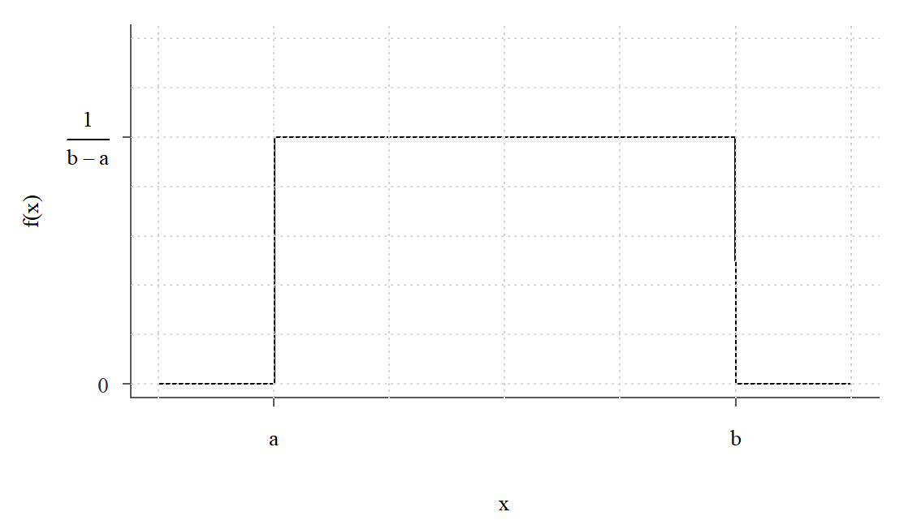
9 Sürekli Rassal Değişkenler
\[ \renewcommand{\E}{\mathbb{E}} \renewcommand{\P}{\mathbb{P}} \renewcommand{\Var}{\mbox{Var}} \renewcommand{\Cov}{\mbox{Cov}} \renewcommand{\plim}{\operatornamewithlimits{plim}} \renewcommand{\cd}{\overset{d}{\longrightarrow}} \renewcommand{\cp}{\overset{p}{\longrightarrow}} \renewcommand{\adistr}{\stackrel{a}{\sim}} \renewcommand{\ind}{1\hspace{-2.5mm}{1}} \]
Bu bölümün amacı.
- Sürekli rassal değişkenlerin temel özelliklerini göstermek
- Olasılık yoğunluk fonksiyonu ile birikimli dağılım fonksiyonunu tanıtmak
- Beklenen değeri, varyansı ve momentleri hesaplamak
Bir sürekli rassal değişken, reel sayılar doğrusu üzerinde herhangi bir değeri alabilir. Reel sayıların özellikleri gereği, birbirine ne kadar yakın olursa olsun iki reel sayı arasında sonsuz sayıda rasyonel ve irrasyonel sayı bulunur. Bu nedenle, sürekli rassal değişkenlerin alabileceği değerler sayılamaz veya listelenemez. Buna karşılık, önceki bölümde gördüğümüz gibi, kesikli rassal değişkenler belirli değerleri alabilir ve bu değerler genellikle kolayca sayılabilir veya listelenebilir. Varlık fiyatları, bir dönemdeki fiyatlar genel düzeyi, enflasyon oranı, hanelerin yıllık tasarrufu veya bir çeyrekte gerçekleşen ihracat tutarı gibi değişkenler sürekli rassal değişkenlere örnek olarak verilebilir.
Bu bölümde, sürekli rassal değişkenlerin dağılımlarını ve ilgili temel kavramları ele alacağız. Öncelikle, sürekli rassal değişkenlerin olasılık yoğunluk fonksiyonu ve birikimli dağılım fonksiyonu gibi temel bileşenleri tanıtılacaktır. Daha sonra, bu değişkenlerin beklenen değer ve varyans gibi önemli özet ölçümleri ele alınacaktır. Bölümün sonunda uygulamalarda sık kullanılan üstel dağılımı tanıtacağız. Sürekli dağılımların en yaygın kullanılanı olan normal dağılımı izleyen bölümde ayrıntılı biçimde ele alacağız (bkz. Bölüm 10). Birden fazla rassal değişkenin birleşik dağılımlarını ise ayrı bir bölümde ele alacağız (bkz. Bölüm 11).
9.1 Sürekli Rassal Değişkenlerin Dağılımları
Bir \(X\) sürekli rassal değişkeni sayılamayacak kadar çok değerden birini alabilir ve herhangi bir reel sayıya eşit olma olasılığı sıfırdır. Kesikli rassal değişkenlerden farklı olarak, sürekli rassal değişkenlerin bir değere eşit olma olasılığı değil, belli bir aralık içine düşme olasılığı hesaplanır.
Örneğin, bir şehirdeki hanehalklarının aylık gelir dağılımını düşünelim. \(X\) bir hanenin aylık gelirini (TL cinsinden) temsil etsin. Hane gelirleri belli bir aralıkta herhangi bir değeri alabilir. Ancak, \(X\) değişkeninin tam olarak bir değere, örneğin 36748.65 TL’ye eşit olma olasılığı sıfırdır. Bunun yerine, gelirin belirli bir aralıkta olma olasılığı daha anlamlı bir şekilde hesaplanabilir. Örneğin, bir hanenin gelirinin 36000 TL ile 37000 TL arasında olma olasılığı üzerinde durulabilir.
Sürekli rassal değişkenlerin belirli bir değere eşit olma olasılığının sıfır olması, kesikli rassal değişkenlerde gördüğümüz olasılık hesaplamalarından önemli bir farklılık oluşturur. Sürekli bir rassal değişken için olasılık hesaplamaları, bir noktadan ziyade belirli bir aralığa odaklanmayı gerektirir. Şimdi, bu kavramı daha iyi anlamak için pratik bir örnek üzerinden ilerleyelim.
9.1.1 Tek bir değerin olasılığı neden sıfırdır?
Bir torbaya 0’dan 9’a kadar numaralandırılmış topları koyduğumuzu düşünelim. Torbadan rastgele bir top çekeceğiz ve rakamı kaydedeceğiz. Topu yerine koyacağız ve tekrar bir top çekeceğiz. Böylece ardarda yaptığımız çekilişler birbirinden bağımsız olur. Çektiğimiz rakamları kullanarak 0 ile 1 arasında bir sayı oluşturacağız. Çektiğimiz sayılar noktadan sonraki basamakları temsil edecek.
Birinci çekilişte olanaklı sayılar \(S=\{0.0,0.1,0.2,\ldots,0.9\}\) olur. Örneklem uzayında 10 temel sonuç bulunur ve bunların gerçekleşme olasılığı aynıdır. Öyleyse \[ \P(X=x) = \frac{1}{10},\quad x=0.0,0.1,\ldots,0.9 \] olarak yazılabilir. Bu dağılımı önceki bölümde incelemiştik (kesikli tekdüze dağılım).
Şimdi ikinci topu çekelim ve noktadan sonraki ikinci basamağı oluşturalım. Bu durumda örneklem uzayı 100 noktadan oluşacaktır: \[ S=\{0.00,0.01,0.02,\ldots,0.98,0.99\} \] Bu durumda her bir değerin gerçekleşme olasılığı \[ \P(X=x) = \frac{1}{100},\quad x=0.00,0.01,\ldots,0.99 \] Benzer şekilde üçüncü topu çekerek noktadan sonraki binler basamağını oluşturursak örneklem uzayı \[ S=\{0.000,0.001,0.002,\ldots,0.998,0.999\} \] 1000 elemandan oluşur. Herbirinin gerçekleşme olasılığı \[ \P(X=x) = \frac{1}{1000},\quad x=0.000,0.001,\ldots,0.999 \] olur.
Çekilen rakam sayısı arttıkça, rassal değişkenin alabileceği olası değerlerin sayısı üstel olarak artar. \(n\) çekişten sonra, olası değerlerin sayısı \(10^n\) olur. Örneğin, \(0.123456\) sayısının çekilme olasılığı \(0.000001\) olur.
Limitte rassal değişken 0 ile 1 arasında herhangi bir değeri alabilir ve artık listelenemez olur. Belirli bir değere eşit olma olasılığı \[ \P(X=x) =\lim_{n\rightarrow \infty} \left( \frac{1}{10} \right)^n = 0 \] olacaktır. Bu örnekteki 0 ile 1 arasında tanımlı \(X\) rassal değişkeni, aşağıda tekrar inceleyeceğimiz, sürekli tekdüze (uniform) dağılıma uyar.
\(X\) sürekli rassal değişkeni için tanım gereği belirli bir \(x\) değerine eşit olma olasılığı sıfır kabul edilebilir: \(\P(X=x)=0\). Bunun yerine sürekli rassal değişkenin belirli bir aralık içine düşme olasılığı hesaplanır. Kesikli rassal değişkenler için geliştirdiğimiz araçları (örneğin olasılık kütle fonksiyonunu) sürekli rassal değişkenlerin dağılım özelliklerini incelemekte kullanamayız.
9.1.2 Sürekli rassal değişkenlerin aralık olasılıkları
Bir torbaya üzerinde 0’dan 9’a kadar rakamlar olan topları koyarak 0 ile 1 arasında sayı çekme örneğimize geri dönelim. Yerine koyarak yaptığımız tesadüfi çekilişlerden hareketle \(0.8453923...\) gibi sayılar oluşturabileceğimizi öğrenmiştik. Bu rassal değişkene \(X\) diyelim. Bu deneyin örneklem uzayı 0 ile 1 arasındaki tüm reel sayılar kümesidir, yani \(x\in [0,1]\) yazılabilir. \(X\) sürekli olduğu için belirli bir değere eşit olma olasılığının 0 olduğunu öğrendik.
Şimdi \(X\) rassal değişkeninin belirli bir değerden küçük ya da eşit olma olasılığını bulmaya çalıştığımızı düşünelim. İlgilendiğimiz belirli değer \(x\) olsun. \(X\)’in tanım aralığı \(0\leq X \leq 1\) olduğu için bulmak istediğimiz aralık olasılığı aşağıdaki gibi yazılabilir:
\[
\P(0\leq X\leq x)=?
\]
Basitlik amacıyla birinci çekilişle başlayalım. Bu durumda olanaklı sonuçlar kümesinin \(S=\{0.0,0.1,0.2,\ldots,0.9\}\) olduğunu biliyoruz. Buradan hareketle belirli bir değeri, örneğin 0.3 değerini, aşmama olasılığı kaçtır? \[ \P(0\leq X\leq 0.3) = \P(X=0.0) + \P(X=0.1) + \P(X=0.2) + \P(X=0.3) = 0.4 \] olur.
Çekiliş sayısını arttıralım. Noktadan sonraki iki basamağı seçtiğimizi düşünelim. Örneğin birinci çekiliş \(a=3\) ve ikinci çekiliş \(b=5\) ise \(x=0.35\) olur. İlgilendiğimiz aralık olasılığı
\[
\P(0\leq X\leq 0.35)=?
\] olarak yazılabilir. \(X\)’in \(0.35\)’den küçük ya da eşit olma olasılığıyla ilgilendiğimize göre öncelikle deneyin örneklem uzayındaki noktaları belirlememiz gerekir. Örneklem uzayında (çekebileceğimiz tüm sayılar kümesi) 0.00’dan 0.99’a kadar 100 sayı vardır. İlk çektiğimiz rakam 3’ten küçükse (0, 1 ya da 2), ikinci çektiğimiz rakamın bir önemi olmaz, çünkü sayı her durumda \(0.35\)’ten küçük olacaktır. Bunun \(3\cdot 10=30\) farklı yolu vardır. İlk rakam 3 olduğunda ise \(0.35\)’e eşit ya da daha küçük bir sayı elde etmek için ikinci rakamın 0, 1, 2, 3, 4 ya da 5 olması gerekir; bunun da \(1\cdot 6=6\) yolu vardır. Öyleyse \(0\leq X\leq 0.35\) olayı toplam \(30+6=36\) farklı yoldan gerçekleşebilir. Dolayısıyla ilgilendiğimiz olasılık \[
\P(0\leq X\leq 0.35)=36/100=0.36
\] olarak bulunur.
Çekiliş sayısını \(n=3\) yaparak \(X=0.abc\) biçiminde bir rassal sayı oluşturmak istersek olanaklı sonuçlar kümesinin 1000 olduğunu kolayca görebiliriz. İlgilendiğimiz sayı \(x=0.358\) ise bu değere eşit veya küçük sonuçların sayısı 359 olacağı için istenen olasılık \[ \P(0\leq X\leq 0.358)=0.359 \] olur.
Benzer biçimde 5 rakam çektiğimizde ilgili olasılık \(\P(0\leq X\leq 0.35847)=0.35848\), 10 rakam çektiğimizde ise \(\P(0\leq X\leq 0.3584736291)=0.3584736292\) olur. Basamak sayısı sonsuza giderken \(x\) ile \(\P(0\leq X\leq x)\) arasındaki fark kapanır ve limitte bu fark sıfır olur. Öyleyse limitte \[ \P(0\leq X\leq x)=x \] olacaktır.
Şimdi \(X\)’in herhangi iki sayı arasında kalma olasılığını bulmaya çalışalım: \[ \P(a\leq X\leq b)=? \] Örnek olarak \(\P(0.35 \leq X\leq 0.75)\) olasılığını bulalım. Yukarıda olduğu gibi yerine konarak 100 farklı sayı seçilebilir. \(0.35\)’e eşit ya da büyük ve \(0.75\)’e eşit ya da küçük sayılar toplam 41 farklı şekilde seçilebilir, öyleyse \[ \P(0.35 \leq X\leq 0.75)=0.41 \] olur. Bu 41 sayının 30 tanesi ilk rakamı 4, 5 ya da 6 olan sayılardır (\(3\cdot 10\)). Kalanların 5 tanesi 0.35 ile 0.39, 6 tanesi ise 0.70 ile 0.75 arasındadır. Noktadan sonraki basamak sayısı arttıkça bu olasılık \([a,b]\) doğru parçasının uzunluğuna yaklaşır ve limitte ona eşit olur: \[ \P(a\leq X\leq b)=b-a \]
Bu sonuç doğru parçasının kendi sınırlarını içerip içermemesinden bağımsızdır. Öyleyse \[ \P(a\leq X\leq b)=\P(a< X\leq b)=\P(a\leq X<b)=\P(a< X< b)=b-a \] yazılabilir.
Özetlersek, sürekli rassal değişkenlerin belirli bir değeri aşmama olasılığı \(\P(X<x)\) anlamlı bir şekilde hesaplanabilirken, belirli bir değere eşit olma olasılığı sıfırdır, \(\P(X=x)=0\). Bu nedenle olasılık kütle fonksiyonunu bu değişkenler için kullanamayız. \(X\)’in dağılımını betimlemekte kullandığımız temel araçlar olasılık yoğunluk fonksiyonu ve birikimli dağılım fonksiyonudur.
9.1.3 Olasılık yoğunluk fonksiyonu
Tanım 9.1 (Olasılık Yoğunluk Fonksiyonu) \(X\) sürekli rassal değişkeninin olasılık yoğunluk fonksiyonu (oyf) ya da kısaca yoğunluk fonksiyonu, \(f(x)\), aşağıdaki özellikleri taşıyan bir fonksiyondur: \[ 1.\quad f(x)\geq 0, ~~~~~~-\infty<x<\infty \tag{9.1}\] \[ 2.\quad \int_{-\infty}^{+\infty} f(x)dx = 1 \tag{9.2}\]
Pozitiflik: Birinci özelliğe göre \(X\)’in alabileceği tüm değerler için yoğunluk fonksiyonu değerleri, tıpkı kesikli rassal değişkenler için olasılık kütle fonksiyonu değerleri gibi, negatif olamaz.
İntegralin 1 olması: İkinci özellik alt ve üst sınırları \(X\)’in değerler aralığı olan integralin 1’e eşit olduğunu söylemektedir. Başka bir deyişle, \(f(x)\) eğrisinin altında kalan alan bire eşittir (bkz. Şekil 9.1).
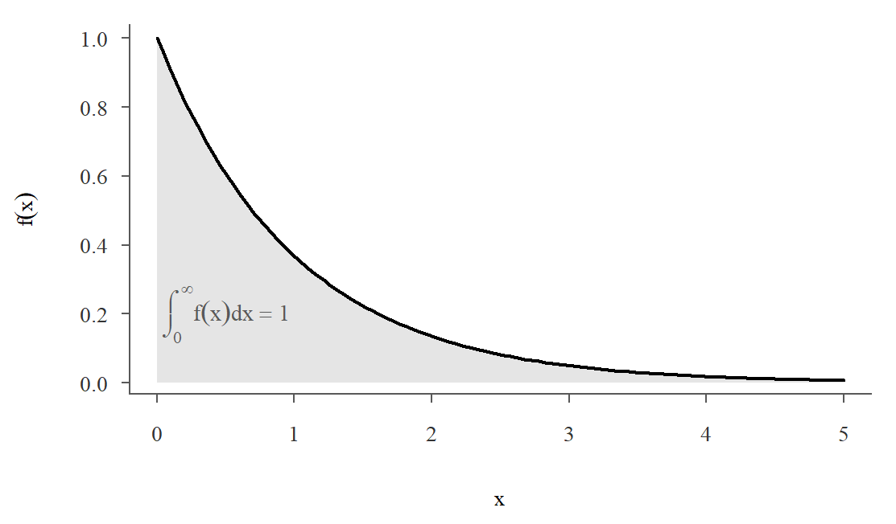
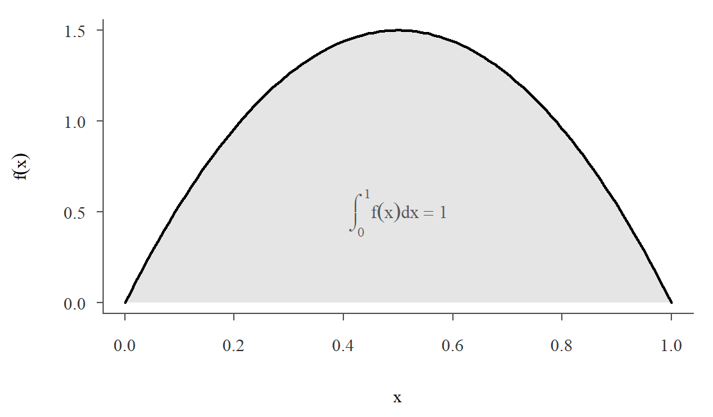
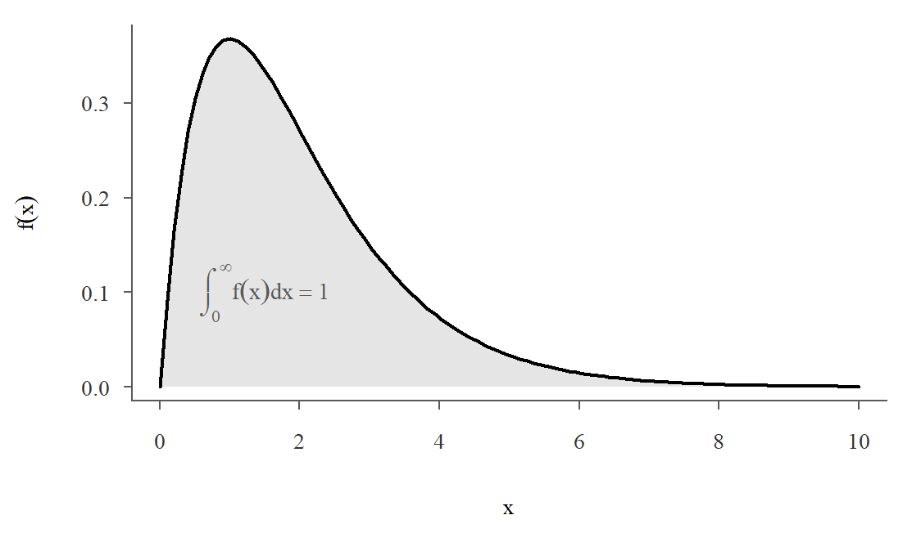
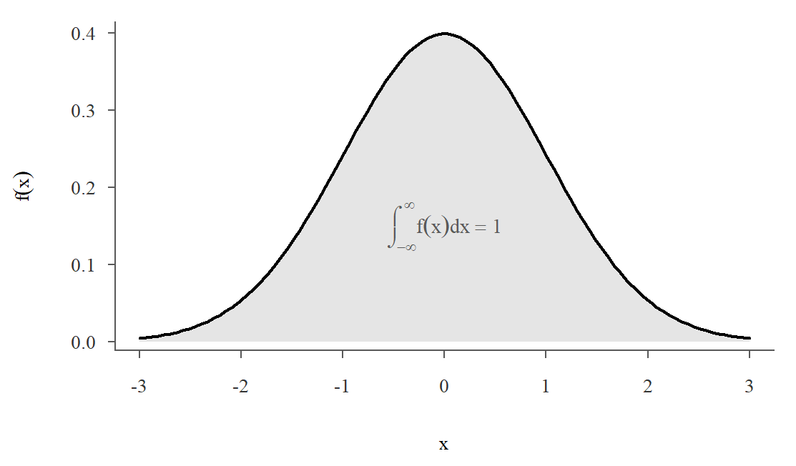
Şekil 9.1 farklı tanım aralıklarına ve biçimlere sahip bazı olasılık yoğunluk fonksiyonlarını göstermektedir. Simetrik, sağa ya da sola çarpık, kalın veya ince kuyruklu, çok modlu gibi çeşitli özelliklere sahip olsalar da her bir olasılık yoğunluk fonksiyonu her zaman yukarıdaki iki özelliği sağlamak zorundadır.
Olasılık yoğunluk fonksiyonu \(f(x)\)’in aldığı değer 0 ile 1 arasında olmak zorunda değildir. Burada getirilen tek kısıt negatif değerler almamasıdır. Belirli bir \(x\) değerine karşılık gelen \(f(x)\), o değerin olasılığını değil yoğunluğunu verir. Herhangi bir pozitif sayıya eşit olabilen bu yoğunluk değerlerini kullanarak, ilgilendiğimiz bir aralıktaki olasılığı belirli integral yardımıyla hesaplayabiliriz.
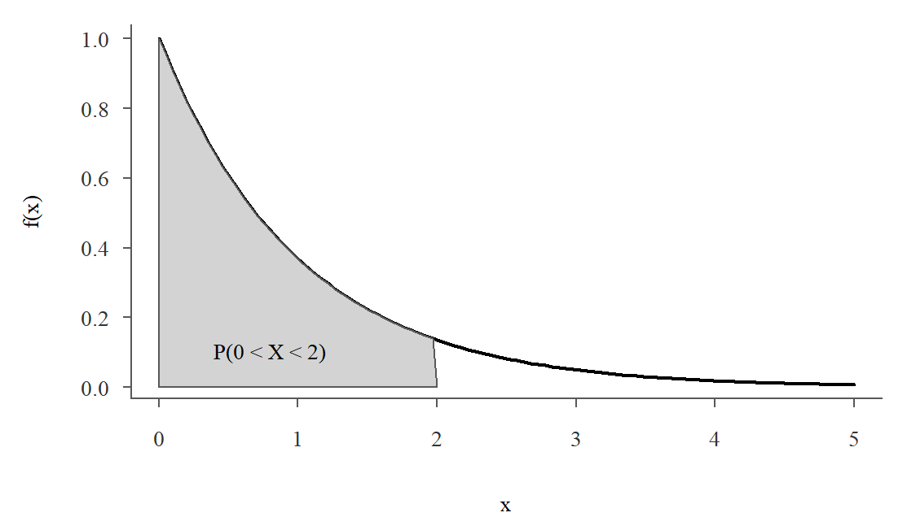
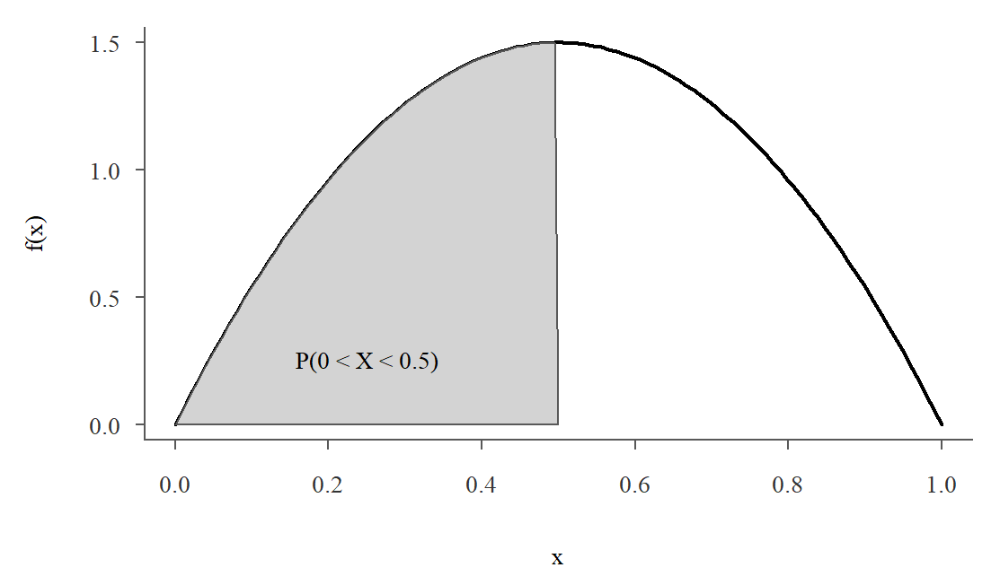
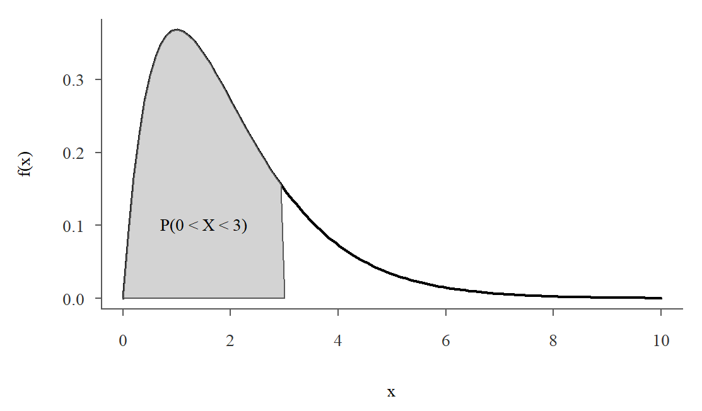
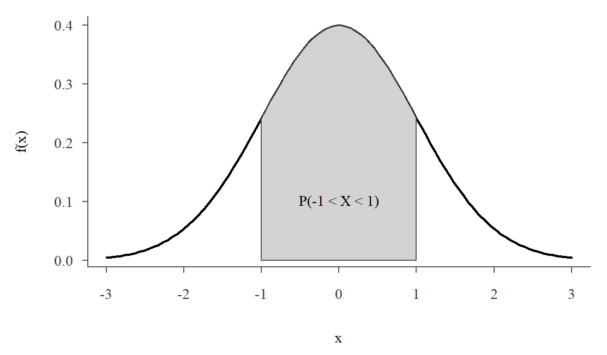
\(a<b\) olmak üzere, \(a\) ve \(b\), \(-\infty<a<b<\infty\) özelliğini sağlayan herhangi iki reel sayı ise, \(X\)’in bu değerler arasında olma olasılığı alt sınırı \(a\), üst sınırı \(b\) olan belirli integralin değerine eşittir. Yani, \(X\)’in \(a\) ile \(b\) arasında olma olasılığı \(f(x)\)’in altında kalan ve sınırları \(a\) ile \(b\) tarafından belirlenmiş bölgenin alanına eşittir: \[ \P(a<X<b)=\int_a^b f(x)dx \tag{9.3}\] Tek tek noktaların olasılıkları sıfır olduğundan \[ \P(a<X<b)=\P(a\leq X\leq b) \tag{9.4}\] yazılabilir. Bu olasılık \(f(x)\)’in altında kalan \(a\) ve \(b\) ile sınırlanmış bölgenin alanı olarak yorumlanabilir. Şekil 9.2 farklı olasılık yoğunluk fonksiyonları için tanımlanmış bazı aralık olasılıklarını göstermektedir. Belirli integralin çözümüyle bulunabilen bu aralık olasılıkları gri renkte taranmış bölgelerin alanına eşittir.
Örnek 9.1 (Sürekli Tekdüze (Uniform) Dağılım) \(X\) 0 ile 1 aralığında tanımlı uniform ya da tekdüze dağılıma sahipse olasılık yoğunluk fonksiyonu aşağıdaki gibi yazılır (kısaca, \(X\sim U(0,1)\)): \[ f(x)= \left\{ \begin{array}{ll} 1, & 0<x<1~ \hbox{ise;} \\ 0, & \hbox{değilse.} \end{array} \right. \tag{9.5}\]
Bunun bir oyf olma koşullarını sağladığı açıktır. \(x \in [0,1]\) için olasılık yoğunluk fonksiyonu \(f(x)\geq 0\) olduğu görülmektedir. Ayrıca bu aralıkta integral bire eşittir:
\[
\int_0^1 f(x)dx = 1
\] Uniform dağılım için aralık olasılıkları kolayca hesaplanabilir: \[
\P(a< X< b)=\int_a^b f(x)dx = b-a
\] Genel olarak \([a,b]\) aralığında tanımlı uniform dağılıma uyan \(X\) rassal değişkeninin, \(X\sim U(a,b)\), olasılık yoğunluk fonksiyonu şöyle olur: \[
f(x)=
\left\{
\begin{array}{ll}
\frac{1}{b-a}, & a<x<b~ \hbox{ise;} \\
0, & \hbox{değilse.}
\end{array}
\right.
\tag{9.6}\]
Şekil 9.3 \((a,b)\) aralığında tanımlı bir tekdüze rassal değişkenin olasılık yoğunluk fonksiyonunu göstermektedir.
Örnek 9.2 Öğrencilerin bir sınavı tamamlama süreleri 20 ile 40 dakika arasında tekdüze dağılıma uymaktadır. Buna göre bir öğrencinin sınavı bitirme süresinin
- 30 dakikadan az,
- 25 ile 35 dakika arasında
olma olasılıklarını bulunuz.
Çözüm
- Tekdüze olasılık yoğunluk fonksiyonunun tanımından hareketle (bkz Denklem 9.6) \[ f(x)= \left\{ \begin{array}{ll} \frac{1}{20}, & 20<x<40~ \hbox{ise;} \\ 0, & \hbox{değilse.} \end{array} \right. \] yazabiliriz. Buradan
bulunur.
- İstenen aralık olasılığı
olur. Şekil 9.4 bu aralık olasılıklarını göstermektedir.
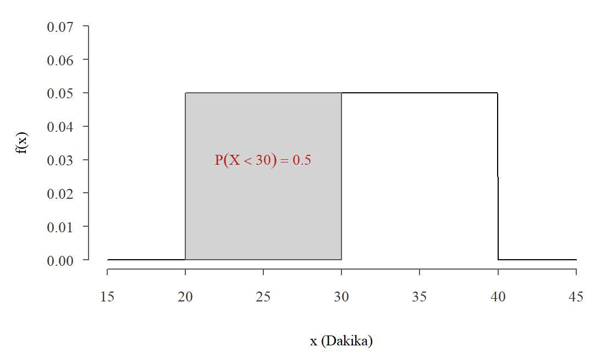
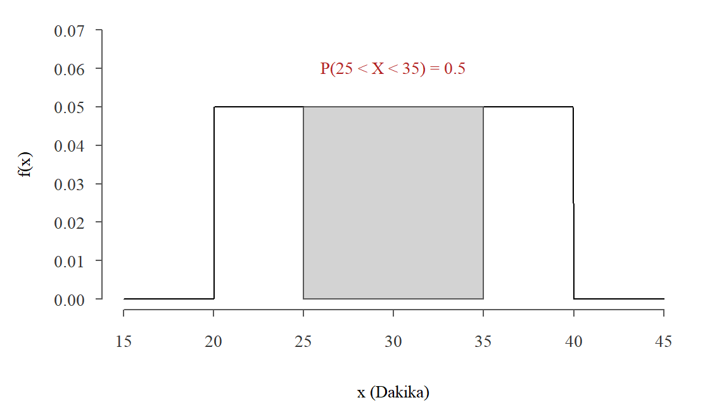
Örnek 9.3 R’da runif() fonksiyonunu kullanarak 0-1 aralığından 100 gözlemlik bir örneklem çekin. Sınıf sayısının 5 olduğu bir histogram çizin ve her sınıfın olasılığını hesaplayın. Teorik olasılıklarla karşılaştırın. Gözlem sayısı arttıkça verilerden hesaplanan olasılıkların teorik aralık olasılıklarına yaklaştığını gösterin.
Çözüm
Önce veri kümesini türetelim ve hist() fonksiyonu ile histogram için gereken verileri elde edelim:
# (0,1) aralığında Uniform rassal değişken
set.seed(123)
veri <- runif(100, min = 0, max = 1)
# Histogram bilgileri: sınıf sınırları doğrudan verildi
bins <- 5
hist_data <- hist(veri, breaks = seq(0, 1, length.out = bins + 1),
probability = TRUE,
plot = FALSE)Aralık alt ve üst sınırları ile yoğunluk değerlerinden hareketle tekdüze rassal değişkenin bu alt aralıklar içine düşme olasılıklarını hesaplayabiliriz:
# aralık sınırları
alt = head(hist_data$breaks, -1)
ust = hist_data$breaks[-1]
# yoğunluk (dikdörtgenin boyu)
yogunluk = hist_data$density
# dikdörtgenlerin alanları
alan = yogunluk*(ust-alt)
teorik_yogunluk = rep(1, bins)
teorik_olasilik = rep(1/bins, bins)
cbind(alt, ust, yogunluk, alan, teorik_yogunluk, teorik_olasilik) alt ust yogunluk alan teorik_yogunluk teorik_olasilik
[1,] 0.0 0.2 0.95 0.19 1 0.2
[2,] 0.2 0.4 1.00 0.20 1 0.2
[3,] 0.4 0.6 1.05 0.21 1 0.2
[4,] 0.6 0.8 1.10 0.22 1 0.2
[5,] 0.8 1.0 0.90 0.18 1 0.2Her bir aralık olasılığının 0.2 olduğunu biliyoruz. Ancak örnekleme hatalarından dolayı histogram üzerinden hesaplanan aralık olasılıkları bu değere eşit olmayabilir. Şekil 9.5 verinin histogramını, hesaplanan aralık olasılıklarını ve yoğunluk fonksiyonunu göstermektedir.
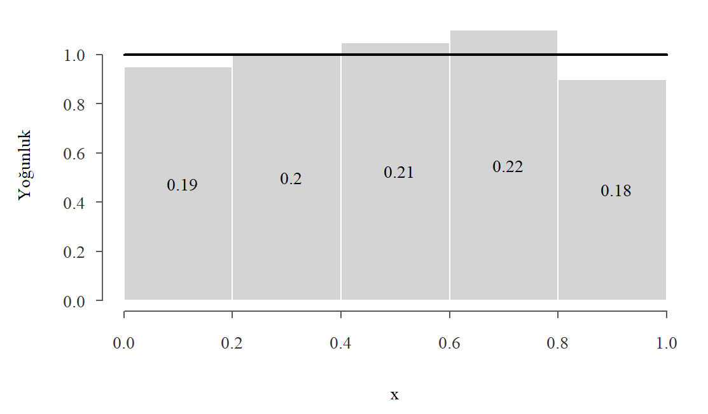
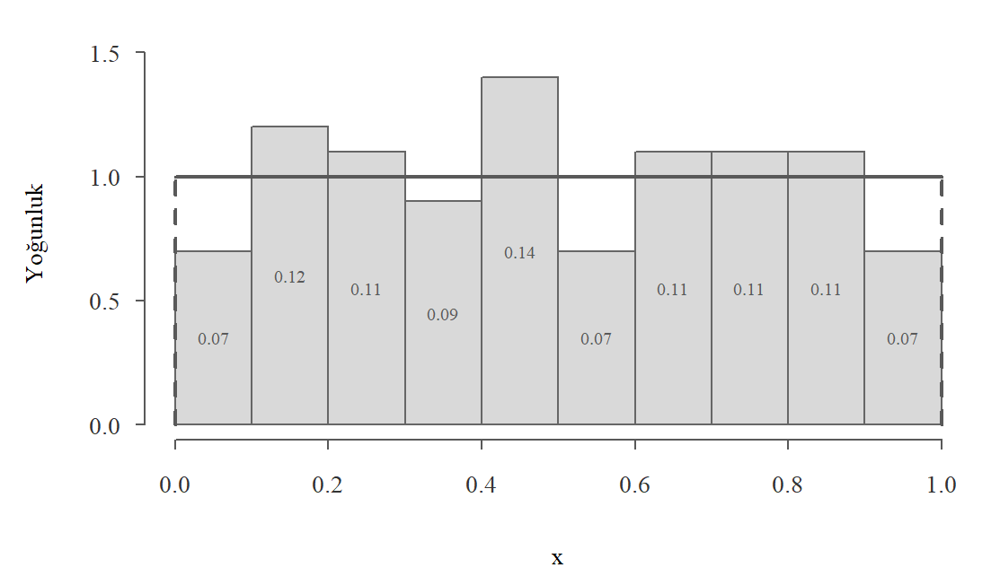
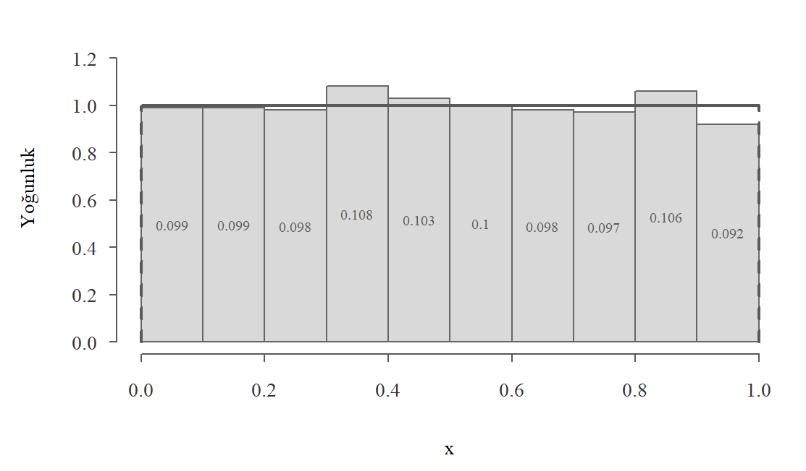
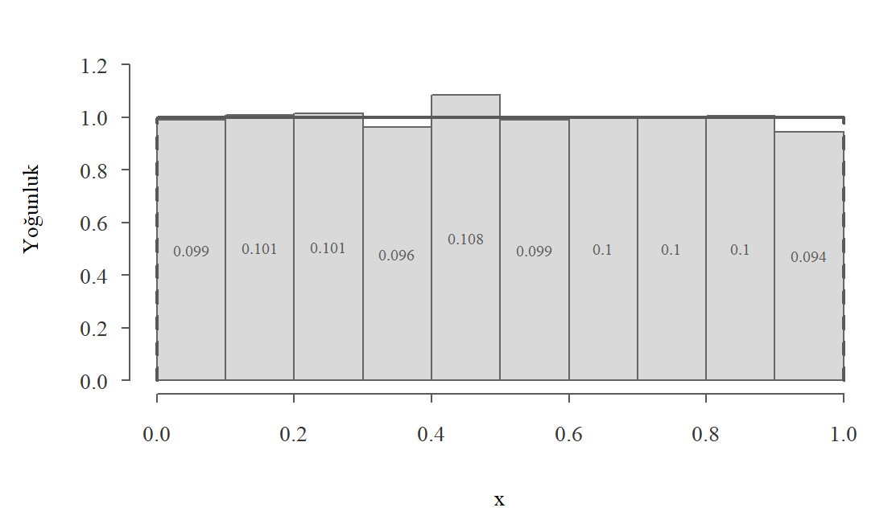
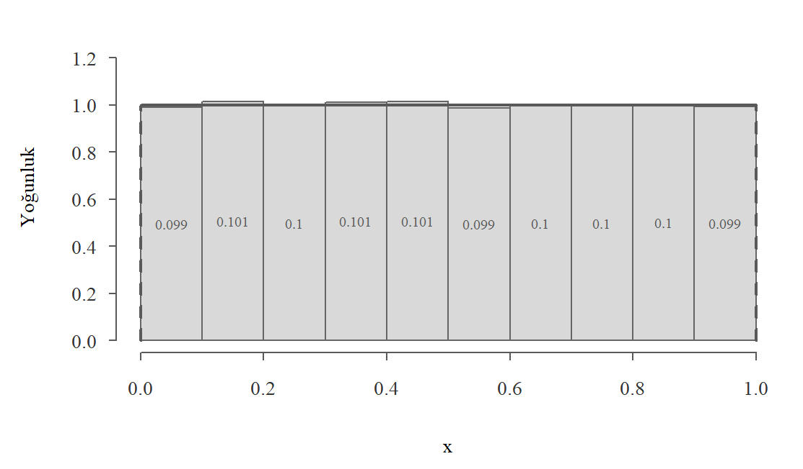
Şekil 9.6 gözlem sayısı arttıkça aralık olasılıklarının teorik olasılıklara yaklaştığını göstermektedir.
Örnek 9.4 (Histogramdan yoğunluğa: hane gelirleri) Hane anakütlesinde (bkz. Tablo 3.4) aylık gelir sürekli bir değişken olarak düşünülebilir. Anakütleden rassal olarak bir hane seçtiğimizde, bu hanenin gelirinin 2000 TL ile 3000 TL arasında olma olasılığı anakütlede geliri bu aralıkta olan hanelerin oranına eşittir:
load("Data/hane_anakutle.RData")
gelir <- hane_anakutle$aylik_gelir
mean(gelir > 2000 & gelir < 3000)[1] 0.24845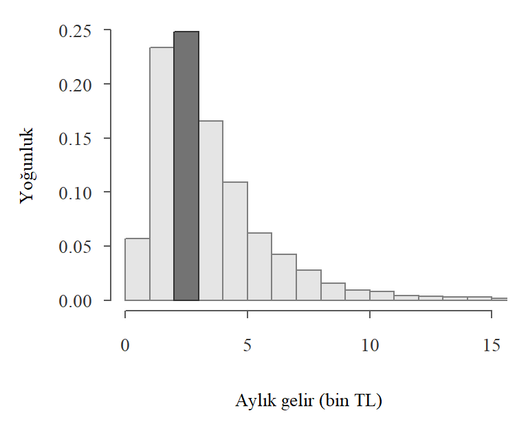
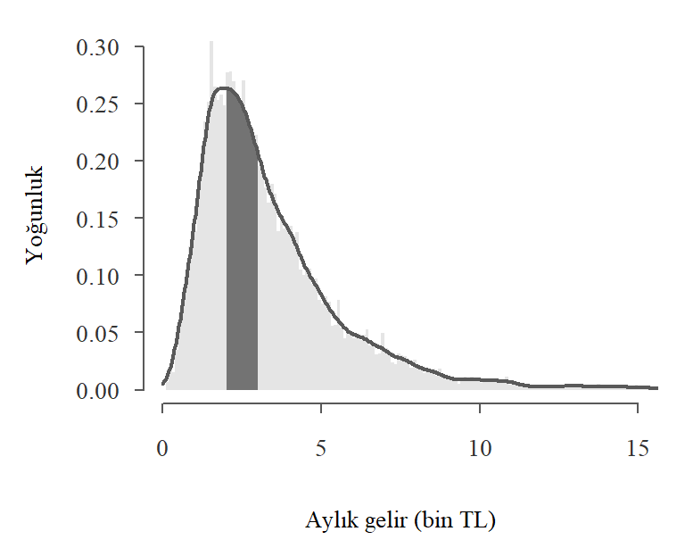
Anakütledeki 20000 hanenin yüzde 24.8 kadarının geliri 2000 ile 3000 TL arasındadır. Rassal seçilen bir hane için \(\P(2000<X<3000) = 0.248\) olur.
Soldaki histogramda (Şekil 9.7 (a)) dikey eksen frekans değil yoğunluktur: her sınıfın göreli frekansı sınıf genişliğine bölünmüştür. Bu yüzden her dikdörtgenin alanı, o sınıfa düşen hanelerin oranına eşittir. Gelir bin TL cinsinden ölçüldüğü için sınıf genişliği 1’dir. Koyu renkli dikdörtgenin yüksekliği 0.248, genişliği 1 olduğundan alanı da 0.248 olur. Bu değer yukarıda hesapladığımız orandır.
Sınıflar daraldıkça histogram düzgün bir eğriye yaklaşır (Şekil 9.7 (b)). Bu düzleştirilmiş histogram (bkz. Bölüm 4) sürekli bir rassal değişkenin yoğunluk fonksiyonunun sezgisel karşılığıdır. Eğrinin altında 2000 ile 3000 TL arasında kalan alan yaklaşık 0.242 olarak bulunur ve yukarıdaki orana oldukça yakındır. Yoğunluk eğrisinin yüksekliği tek başına bir olasılık değildir; olasılık, bir aralık üzerinde eğrinin altında kalan alandır.
Örnek 9.5 \(0<X<1\) aralığında değerler alan bir \(X\) rassal değişkeni için aşağıdaki fonksiyon tanımlanıyor: \[ f(x)= \left\{ \begin{array}{ll} cx^2, & 0<x<1~ \hbox{ise;} \\ 0, & \hbox{değilse.} \end{array} \right. \] \(f(x)\)’in bir olasılık yoğunluk fonksiyonu olması için \(c\) kaç olmalıdır?
Çözüm
İki koşulun sağlanması gerekir. İlk olarak \(f(x)\geq 0\) olmalıdır. Bunun için \(c\geq 0\) olacağı görülebilir.
İkinci olarak \(x\)’in tanım aralığında integral 1 olmalıdır:
\[\begin{align*} \int_0^{1} c x^2 dx &= 1 \\ c\int_0^{1} x^2 dx &= 1 \\ \left. c\cdot \frac{x^3}{3} \right|_0^{1} &= 1 \\ c\cdot \frac{1}{3} & = 1 \end{align*}\]Buradan \(c=3\) bulunur. Bir fonksiyonun olasılık yoğunluk fonksiyonu olmasını sağlayan \(c\) gibi sabitlere entegrasyon sabiti ya da normalizasyon sabiti denir. Olasılık yoğunluk fonksiyonu \[ f(x)= \left\{ \begin{array}{ll} 3x^2, & 0<x<1~ \hbox{ise;} \\ 0, & \hbox{değilse.} \end{array} \right. \] olarak yazılabilir.
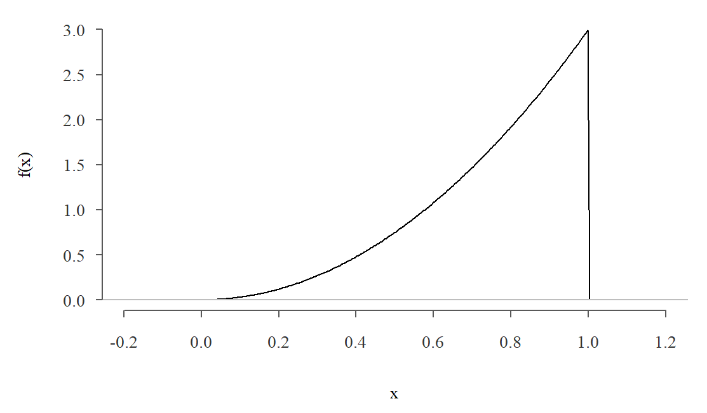
Şekil 9.8 bu rassal değişkenin olasılık yoğunluk fonksiyonunu göstermektedir. Bu şekilden görüldüğü gibi \(x\) tanım aralığı olan 0 ile 1 arasında değişirken, \(f(x)\) 0 ile 3 arasında değerler almaktadır. Her hangi bir \(x\) değerine karşılık gelen \(f(x)\) değeri o noktadaki yoğunluğu göstermektedir. \(x\)’in küçük değerleri için yoğunluk göreceli daha düşük değerler alırken, \(x\) 1’e yaklaştıkça yoğunluk artmaktadır. Yoğunluk ile olasılığın birbiriyle karıştırılmaması gerektiğini belirtmiştik. Verilmiş bir \(x\) değerinin gerçekleşme olasılığından ziyade, bir aralık içine düşme olasılıkları hesaplanabilir.
Örnek 9.6 Örnek 9.5’de verilen olasılık yoğunluk fonksiyonunu kullanarak \(X\)’in 0.4 ile 0.8 arasında kalma olasılığını bulun.
Çözüm
İstenen olasılık \(\P(0.4\leq X \leq 0.8)\) ya da \(\P(0.4< X < 0.8)\) biçiminde yazılabilir. Sınırlarının içerilmesinin önemi yoktur. Olasılık yoğunluk fonksiyonu ve aralık olasılıklarının tanımından hareketle \[ \P(0.4< X < 0.8)=\int_{0.4}^{0.8} 3x^2 \, dx \] yazabiliriz. \[ \int_{0.4}^{0.8} 3x^2 \, dx = \left[ x^3 \right]_{0.4}^{0.8} = 0.8^3 - 0.4^3 = 0.512 - 0.064 = 0.448 \] bulunur.
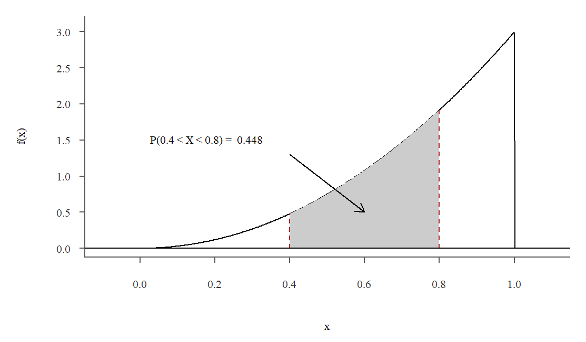
Şekil 9.9 hesapladığımız olasılığı görsel olarak göstermektedir. Eğri \(f(x)=3x^2\) yoğunluk fonksiyonudur. Gri taranmış bölge ise \(x=0.4\) ile \(x=0.8\) arasında kalan alandır ve bu alanın büyüklüğü aradığımız \(\P(0.4<X<0.8)=0.448\) olasılığına eşittir. Sürekli rassal değişkenlerde olasılığın yoğunluk fonksiyonu altındaki alan olarak yorumlandığını bu grafikte açıkça görebiliriz. Kesikli rassal değişkenlerden farklı olarak burada tek bir noktanın olasılığı sıfırdır, çünkü tek bir noktanın altında kalan alan yoktur. Bu nedenle aralığın uç noktalarının içerilip içerilmemesi sonucu değiştirmez.
9.1.4 Birikimli dağılım fonksiyonu
Kesikli rassal değişkenlerde olduğu gibi bir sürekli rassal değişkenin nasıl dağıldığını betimlemenin bir yolu da belirli bir değeri aşmama olasılığını veren birikimli dağılım fonksiyonunu (bdf) bulmaktır. Bu fonksiyona kümülatif dağılım/olasılık fonksiyonu ya da kısaca dağılım fonksiyonu da denir.
Tanım 9.2 (Birikimli Dağılım Fonksiyonu (bdf)) \(X\) sürekli rassal değişkeninin birikimli dağılım fonksiyonu (ya da dağılım fonksiyonu), \(F(x)\), \(X\)’in alabileceği herhangi bir değer olan \(x\)’i aşmama olasılığını \(x\)’in bir fonksiyonu olarak verir: \[ F(x)=\P(X\leq x)=\int_{-\infty}^{x} f(t)dt \tag{9.7}\]
Bu fonksiyon her zaman 0 ile 1 arasında değerler alır: \(0\leq F(x)\leq 1\).
Kesikli rassal değişkenlerde \(x_j\leq x\) için tüm olasılıkları toplayarak birikimli olasılıkları buluyorduk. Sürekli rassal değişkenler için ise yukarıdaki integrali hesaplayarak birikimli olasılıkları elde edebiliriz. Yoğunluk fonksiyonundan farklı olarak \(F(x)\) bize bir olasılık verdiği için her zaman 0 ile 1 arasında bir değer alır. Birikimli dağılım fonksiyonu ile olasılık yoğunluk fonksiyonu arasındaki ilişki şöyledir: \[ f(x) = \frac{dF(x)}{dx} \tag{9.8}\] Birikimli dağılım fonksiyonunun birinci türevi olasılık yoğunluk fonksiyonunu verir. \(F(x)\), olasılık yoğunluk fonksiyonunun altında kalan \(x\) ile sınırlandırılmış bölgenin alanına eşittir.
Birikimli dağılım fonksiyonunun özellikleri şunlardır:
- \(F(x)\) azalmayan bir fonksiyondur ve sınır değerleri şöyledir: \[ F(-\infty)=0, \quad F(+\infty)=1 \tag{9.9}\]
\(F(x)\)’in azalmayan olması, \(x_1\leq x_2\) olmak üzere \[ F(x_1)\leq F(x_2), \quad x_1\leq x_2 \] koşulu her zaman sağlanır. \(x\) negatif sonsuza giderken \(F(x)\) sıfıra, \(x\) pozitif sonsuza giderken \(F(x)\) \(1\)’e yaklaşır.
- \(a<b\) için aralık olasılıkları \[ \P(a\leq X \leq b) = F(b)-F(a)= \int_a^bf(x)dx \tag{9.10}\] ile bulunabilir.
Bu özelliği (Denklem 9.10) daha yakından incelemek için \(X\) değer aralığını aşağıdaki gibi parçalara ayıralım: \[ -\infty <a < b <+\infty \]
Olasılık kurallarını kullanarak \[ \P(-\infty<X<+\infty) = \P(-\infty<X<a) + \P(a<X<b) + \P(b<X<+\infty) \tag{9.11}\] yazabiliriz. Olasılık yoğunluk fonksiyonu kullanılarak bu olasılıklar \[ \int_{-\infty}^\infty f(x)dx = \int_{-\infty}^a f(x)dx + \int_a^b f(x)dx + \int_b^{+\infty} f(x)dx \tag{9.12}\] şeklinde yazılabilir.
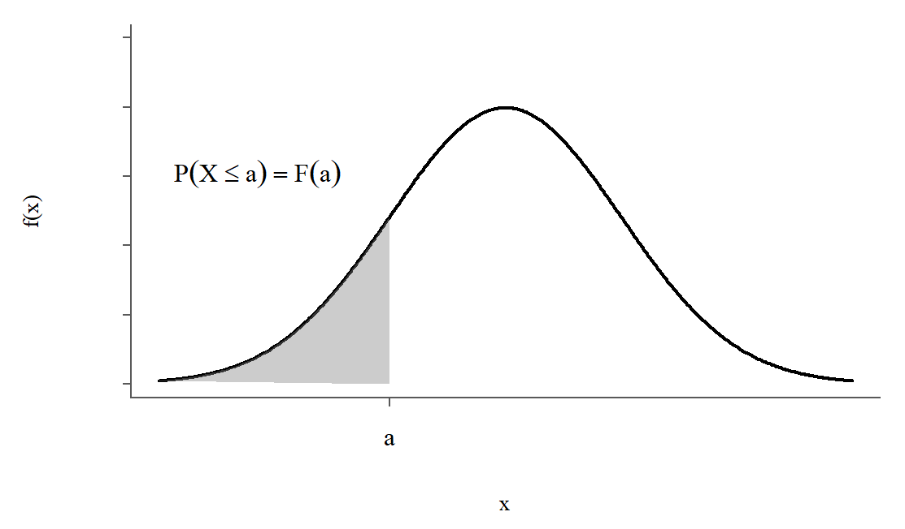
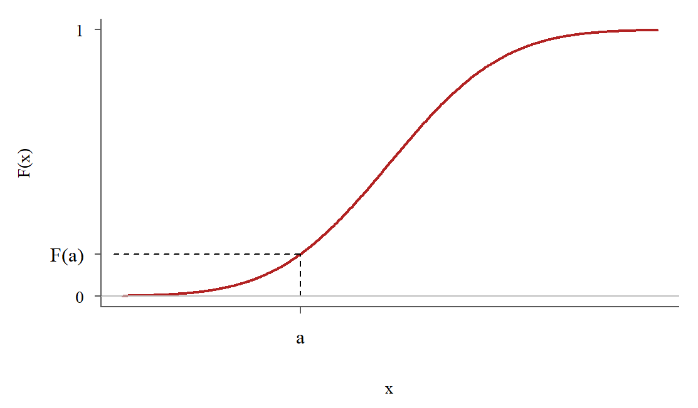
Şekil 9.10 \(X\)’in \(a\) değerinden küçük olma olasılığını oyf ve bdf üzerinde göstermektedir. Şeklin üzerindeki taranmış bölge \[ \P(-\infty <X \leq a) = \int_{-\infty}^a f(x)dx = F(a) \] olasılığını göstermektedir. Bu, birikimli dağılım fonksiyonundaki \(F(a)\) değerine karşılık gelir.
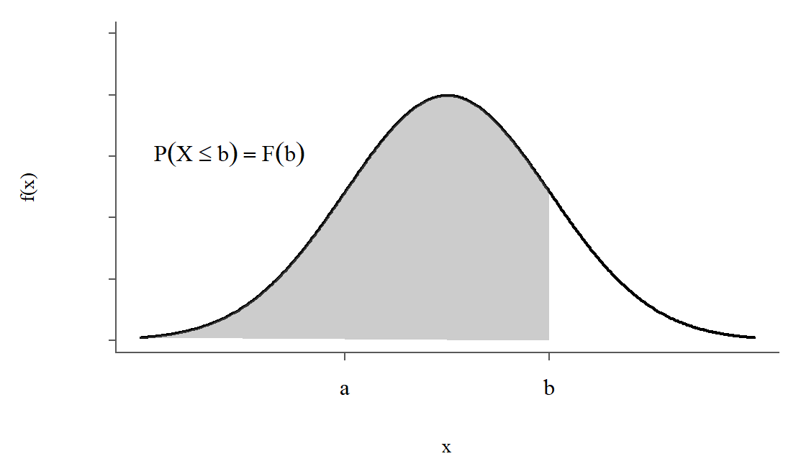
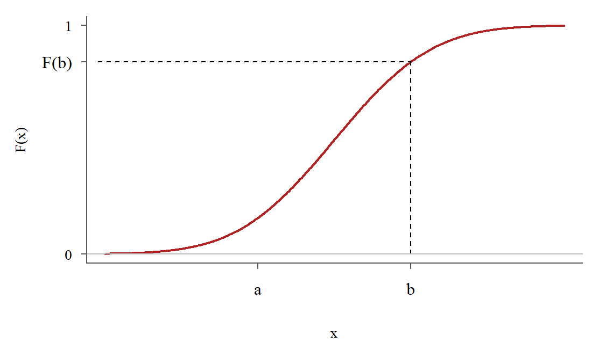
Benzer şekilde, Şekil 9.11 \(X\)’in \(b\) değerinden küçük olma olasılığını oyf ve bdf üzerinde göstermektedir. Şeklin üzerindeki taranmış bölge \[ \P(-\infty <X \leq b) = \int_{-\infty}^b f(x)dx = F(b) \] olasılığını göstermektedir. Bu, birikimli dağılım fonksiyonundaki \(F(b)\) değerine karşılık gelir. \(X\)’in \(b\)’den büyük olma olasılığı ise \[ \P(X>b) = 1-\P(X\leq b) \] ya da \[ \P(b\leq X<\infty) = \int_b^{+\infty} f(x)dx=1-F(b) \] olur. Şekil 9.11’de taranmış bölge \(X\)’in \(b\)’yi aşmama olasılığını veriyordu. Olasılık yoğunluk fonksiyonunun altında kalan tüm bölgenin alanı \(1\) olduğuna göre \(X\)’in \(b\)’den büyük olma olasılığı \(1-F(b)\)’ye eşittir.
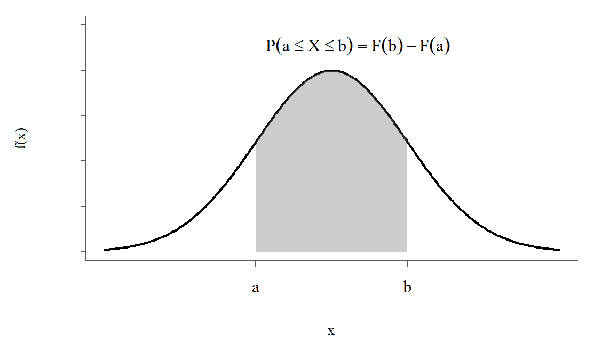
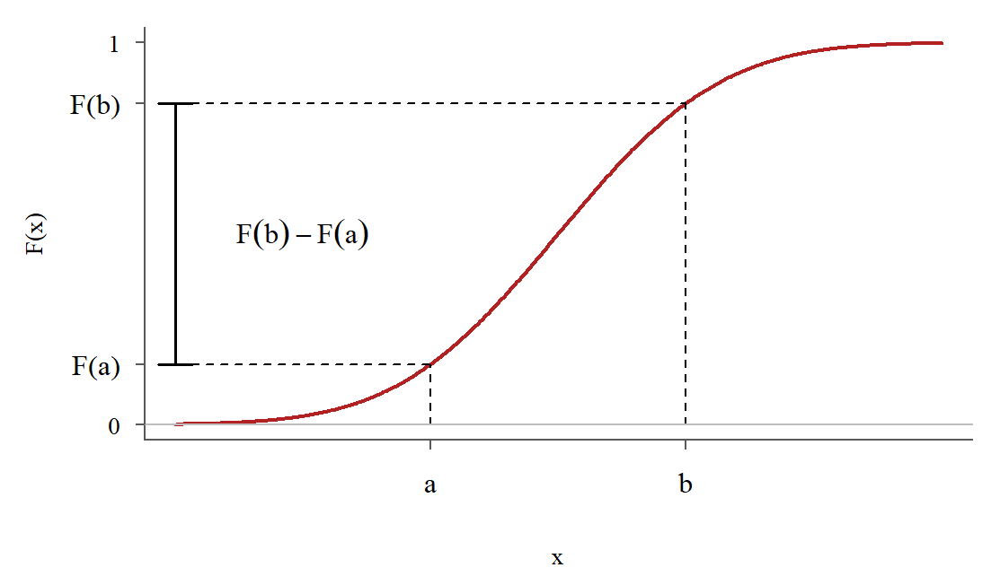
Şekil 9.12 \(X\)’in \(a\) ve \(b\) arasında olma olasılığını göstermektedir. Bu aralık olasılığı \(F(b)\) ile \(F(a)\) arasındaki farka eşittir. Bunu göstermek için önce birikimli dağılım fonksiyonunu kullanarak \[ F(+\infty)-F(-\infty)=[F(a)-F(-\infty)] + \P(a\leq X\leq b) + [F(+\infty)-F(b)] \tag{9.13}\] yazalım. \(F(+\infty)=1\) ve \(F(-\infty)=0\) olduğuna göre \[ 1 = F(a)-0+\P(a\leq X \leq b)+1-F(b) \tag{9.14}\] yazabiliriz. Buradan da \[ \P(a\leq X \leq b) = F(b)-F(a) \tag{9.15}\] bulunur.
Örnek 9.7 (Uniform (Tekdüze) Dağılım) \([0,1]\) aralığında tekdüze dağılıma uyan \(X\) rassal değişkeninin olasılık yoğunluk fonksiyonunu daha önce bulmuştuk (bkz. Örnek 9.1):
\[
f(x)=
\left\{
\begin{array}{ll}
1, & 0<x<1~ \hbox{ise;} \\
0, & \hbox{değilse.}
\end{array}
\right.
\] Şimdi \(X\sim U(0,1)\) için birikimli dağılım fonksiyonunu bulalım. Aslında bölümün başındaki torba örneğinde \(\P(0\leq X\leq x)=x\) olduğunu göstermiştik.
Birikimli dağılım fonksiyonunun tanımından hareketle (bkz. Denklem 9.7):
\[\begin{align*} F(x) &= \P(X\leq x) \\ &= \int_0^x dt \\ &= \left.t\right|_0^x \\ &= x, \quad 0\leq x \leq 1~ \hbox{aralığı için} \end{align*}\]bulunur. \(X\) için dağılım fonksiyonu şu şekilde yazılabilir: \[ F(x) = \left\{ \begin{array}{ll} 0, & x<0\hbox{;} \\ x, & 0\leq x\leq 1\hbox{;} \\ 1, & x>1\hbox{.} \end{array} \right. \tag{9.16}\]
Şimdi herhangi bir \([a,b]\) aralığında tanımlı bir uniform rassal değişken için dağılım fonksiyonunu bulalım (oyf için bkz. Denklem 9.6). Birikimli dağılım fonksiyonunun tanımından hareketle \[
\begin{array}{lll}
F(x) &=& \P(X\leq x) \\
&=& \int_a^x \frac{1}{b-a} dt \\
&=& \left.\frac{t}{b-a}\right|_a^x \\
&=& \frac{x-a}{b-a}, \quad a\leq x \leq b~ \hbox{aralığı için}
\end{array}
\tag{9.17}\] bulunur. Böylece \(X\sim U(a,b)\)’nin birikimli dağılım fonksiyonu
\[
F(x) = \left\{
\begin{array}{ll}
0, & x<a\hbox{;} \\
\frac{x-a}{b-a}, & a\leq x\leq b\hbox{;} \\
1, & x>b\hbox{.}
\end{array}
\right.
\tag{9.18}\] olur.
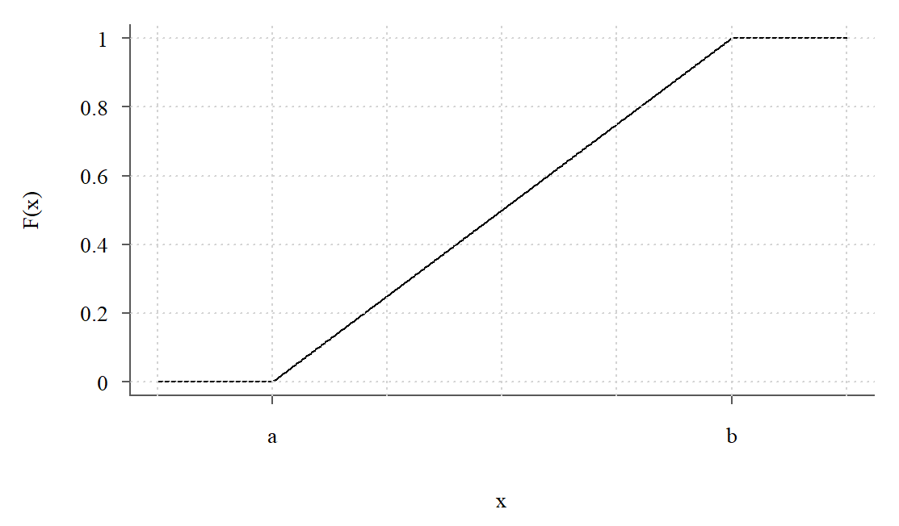
Şekil 9.13 uniform birikimli dağılım fonksiyonunun grafiğini göstermektedir. \(F(x)\)’in her zaman 0 ile 1 arasında değerler aldığına ve \(x\) arttıkça azalmadığına dikkat ediniz. \(F(x)\), \(a\)’dan küçük ve \(b\)’den büyük değerlerde sabit kalır; bu yüzden kesin olarak artan değil, azalmayan bir fonksiyondur.
Örnek 9.8 Örnek 9.5’de verilen olasılık yoğunluk fonksiyonuna \[ f(x)= \left\{ \begin{array}{ll} 3x^2, & 0<x<1~ \hbox{ise;} \\ 0, & \hbox{değilse.} \end{array} \right. \] sahip \(X\) rassal değişkeni için birikimli dağılım fonksiyonunu, \(F(x)\), bulunuz. Bu \(F(x)\)’i kullanarak \(\P(0.4<X<0.8)\) aralık olasılığını hesaplayınız.
Çözüm Denklem 9.7’de verilen birikimli dağılım fonksiyonu tanımından hareketle \[
\begin{array}{lll}
F(x) &=& \int_0^x 3t^2 dt \\
&=& \left. t^3 \right|_0^x \\
&=& x^3, \quad 0 < x < 1~ \hbox{aralığı için}
\end{array}
\]
bulunur. Buradan birikimli dağılım fonksiyonu aşağıdaki gibi yazılabilir: \[
F(x) = \left\{
\begin{array}{ll}
0, & x \leq 0\hbox{;} \\
x^3, & 0< x < 1\hbox{;} \\
1, & x\geq 1\hbox{.}
\end{array}
\right.
\]
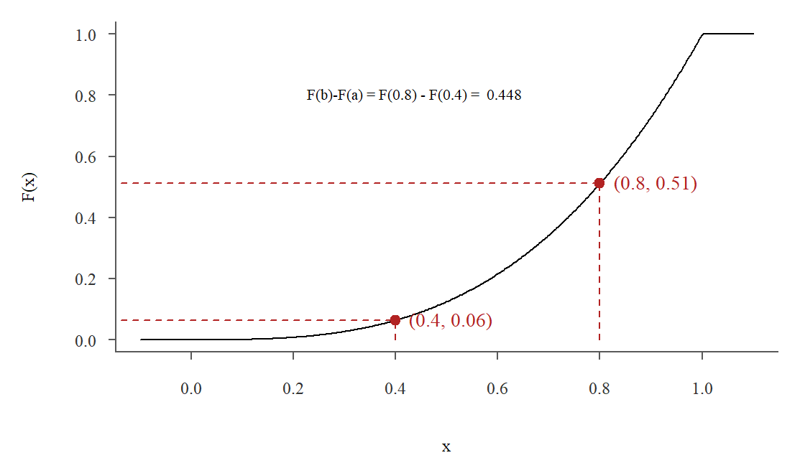
İstenen aralık olasılığını hesaplamak için birikimli dağılım fonksiyonunun tanımından hareketle \[
\begin{array}{lll}
\P(0.4<X<0.8) &=& F(0.8) - F(0.4) \\
&=& 0.8^3 - 0.4^3 \\
&=& 0.448
\end{array}
\]
bulunur. Şekil 9.14 bu olasılığı birikimli dağılım fonksiyonunun grafiği üstünde göstermektedir.
Örnek 9.9 Aşağıda verilen fonksiyonu düşünelim. \[ f(x)= \left\{ \begin{array}{ll} e^{-x}, & 0<x<\infty~ \hbox{ise;} \\ 0, & \hbox{değilse.} \end{array} \right. \]
- Bunun bir olasılık yoğunluk fonksiyonu olduğunu gösterin.
- Bu fonksiyonun grafiğini çizin ve \(X>1\) olasılığı ile ilgili alanı işaretleyin.
- \(\P(X>1)\) olasılığını hesaplayın.
- Birikimli dağılım fonksiyonu \(F(x)\)’i bulun.
Çözüm:
- Sorunun ilk bölümünde bu fonksiyonun bir oyf olup olmadığını göstermemiz istenmektedir. Olasılık yoğunluk fonksiyonları özelliklerini sağlayıp sağlamadığına bakalım:
- İlk olarak, \(f(x)\geq 0\) koşulunun \(0<x<\infty\) aralığındaki her \(x\) değeri için sağlandığı açıktır.
- Ayrıca, \(x\)’in değerler aralığında oyf’nin integralinin 1 olması gerekir. Aşağıdaki eşitliğin sağlanıp sağlanmadığını kontrol edelim: \[ \begin{array}{lll} \int_0^{\infty} e^{-x}dx &=& 1 \\ \left.-e^{-x}\right|_0^{\infty} &=& 1 \\ -e^{-\infty}-(-e^0) &=& 1\\ 0+1 &=& 1 \end{array} \] Burada \(-e^{-\infty}=\lim_{x\rightarrow \infty}-e^{-x}=0\) olarak düşünülmelidir. İkinci koşul da sağlandığına göre bu fonksiyon bir oyf’dir.
- Şekil 9.15 (a) bu oyf’nin grafiğini göstermektedir. \(\P(X>1)\) olasılığı grafikte gösterilmiştir.
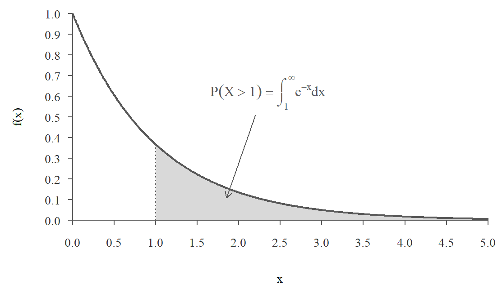
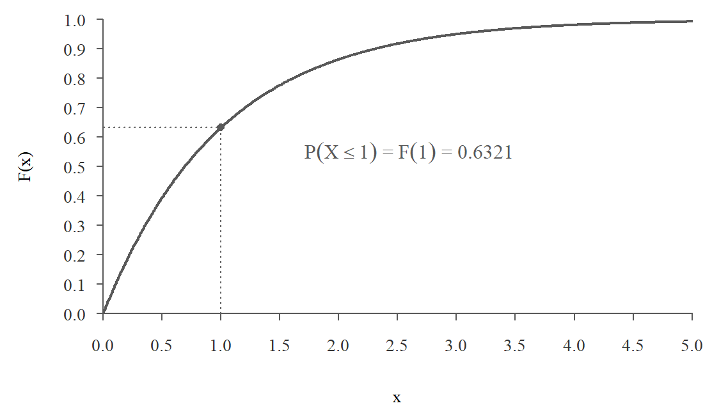
\(\P(X>1)\) olasılığını hesaplayalım: \[ \begin{array}{lll} \P(X>1) &=& \int_1^{\infty} e^{-x}dx \\ &=& \left.-e^{-x}\right|_1^{\infty} \\ &=& e^{-1}\\ &\approx & 0.3679 \end{array} \]
\[ \begin{array}{lll} F(x) &=& \int_0^x e^{-t}dt \\ &=& \left.-e^{-t}\right|_0^{x} \\ &=& -e^{-x}+e^0 \\ &=& 1-e^{-x} \end{array} \] Buradan birikimli dağılım fonksiyonu \[ F(x) = \left\{ \begin{array}{ll} 0, & x<0 \hbox{;} \\ 1-e^{-x}, & x\geq 0 \hbox{.} \end{array} \right. \] olarak bulunur (bkz Şekil 9.15 (b)).
9.1.5 Medyan ve yüzdelikler
Birikimli dağılım fonksiyonu bir değer verildiğinde onu aşmama olasılığını verir. Aynı soruyu ters yönde de sorabiliriz. Verilmiş bir olasılığa karşılık gelen değer kaçtır? Bu soru bizi medyan ve yüzdelik kavramlarına götürür.
Tanım 9.3 (Medyan ve Yüzdelikler) \(X\) sürekli rassal değişkeninin medyanı, aşmama olasılığı \(0.5\) olan \(m\) değeridir: \[ F(m)=\P(X\leq m)=0.5 \tag{9.19}\] Daha genel olarak, \(0<p<1\) olmak üzere \(X\)’in \(p\) yüzdeliği (kantili) \(x_p\), \[ F(x_p)=\P(X\leq x_p)=p \tag{9.20}\] eşitliğini sağlayan değerdir. Medyan \(p=0.5\) durumuna karşılık gelir.
Yüzdelikleri bulmak için birikimli dağılım fonksiyonunu ters yönde çözeriz. Kesikli rassal değişkenlerde \(F(x)\) basamaklı olduğu için \(F(x)=p\) eşitliğini sağlayan bir değer her zaman bulunmayabilir. Sürekli rassal değişkenlerde ise \(F(x)\) sürekli olduğundan ve yoğunluğun pozitif olduğu aralıkta arttığından her \(p\) değeri için bir \(x_p\) vardır. Betimsel istatistikte bir veri kümesi için hesapladığımız kantiller (bkz. Tanım 5.3) bu kavramın örneklem karşılığıdır.
Örnek 9.10 Örnek 9.8’de \(f(x)=3x^2\) yoğunluk fonksiyonuna sahip \(X\) rassal değişkeninin birikimli dağılım fonksiyonunu \(F(x)=x^3\) olarak bulmuştuk. Bu dağılımın medyanını ve 90 yüzdeliğini bulalım.
Çözüm
Medyan \(F(m)=0.5\) eşitliğini sağlayan değerdir: \[ m^3=0.5 \quad \rightarrow \quad m=0.5^{1/3}\approx 0.794 \] 90 yüzdeliği için \(F(x_{0.90})=0.90\) olmalıdır: \[ x_{0.90}^3=0.90 \quad \rightarrow \quad x_{0.90}=0.90^{1/3}\approx 0.965 \] İzleyen bölümde bu dağılımın beklenen değerini \(\E(X)=3/4=0.75\) olarak bulacağız (bkz. Örnek 9.11). Medyan beklenen değerden büyüktür. Yoğunluk \(x\) büyüdükçe arttığı için dağılımın uzun kuyruğu solda kalır ve sola çarpık dağılımlarda ortalama medyandan küçük olur.
Normal dağılımda bu hesabı kantil fonksiyonu üzerinden yapacağız (bkz. Tanım 10.3).
9.2 Beklenen Değer
Tanım 9.4 (Sürekli Rassal Değişkenlerin Beklenen Değeri) Olasılık yoğunluk fonksiyonu \(f(x)\) olan, \(-\infty <x<\infty\) aralığında tanımlı bir \(X\) sürekli rassal değişkeninin beklenen değeri aşağıdaki gibi tanımlanır: \[ \E(X) = \int_{-\infty}^\infty x f(x)dx. \tag{9.21}\]
Kesikli rassal değişkenlerde olduğu gibi, sürekli rassal değişkenler için beklenen değer, \(\E(X)\), yoğunluk fonksiyonunun merkezini, yani anakütle ortalamasını (\(\mu_X\)) gösterir. \(\E(X)\), \(X\)’in ölçü birimi cinsinden yoğunluk fonksiyonunun denge noktası olarak yorumlanabilir (bkz Şekil 9.16). \(X\) rassal değişkenini üreten süreç ya da deney birbirinden bağımsız olarak çok sayıda tekrarlanırsa, gözlemlenen değerlerin ortalaması beklenen değere yaklaşır.
Beklenti işlemcisi, \(\E(\cdot)\), yine kesikli rassal değişkenlerde tanımlandığı gibi doğrusaldır ve matematiksel olarak aynı özelliklere sahiptir.
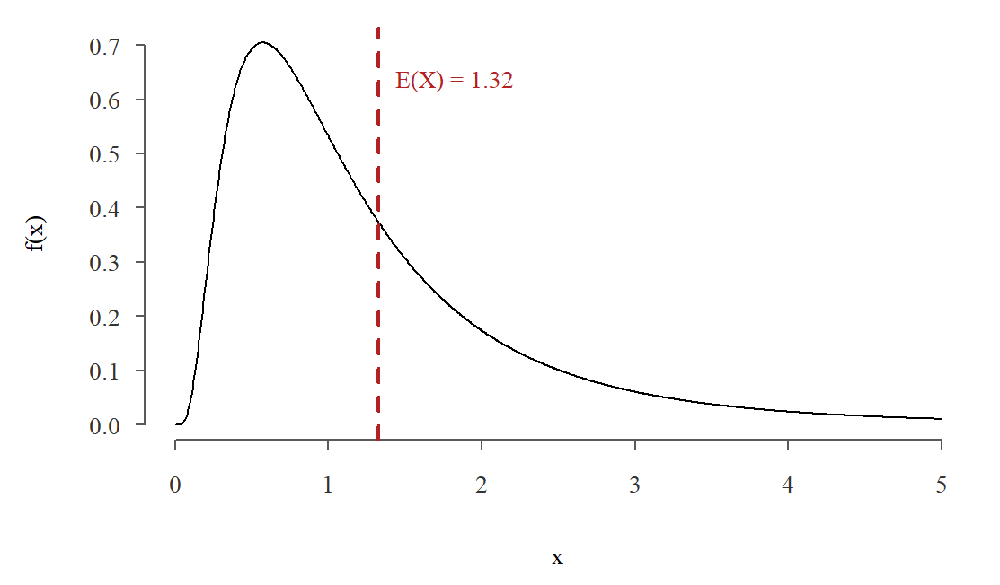
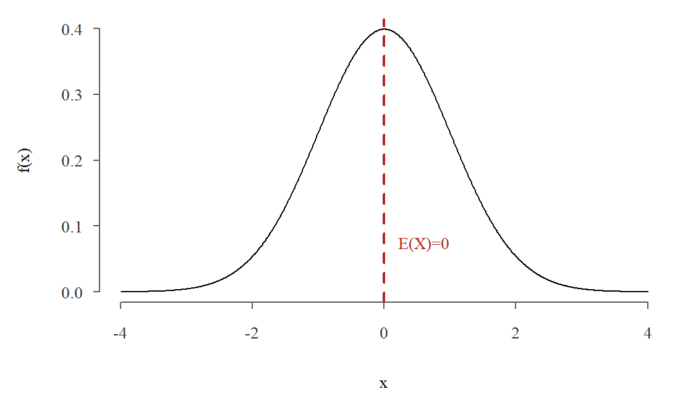
Örnek 9.11 Örnek 9.5’de verilen olasılık yoğunluk fonksiyonuna \[ f(x)= \left\{ \begin{array}{ll} 3x^2, & 0<x<1~ \hbox{ise;} \\ 0, & \hbox{değilse.} \end{array} \right. \] sahip olan \(X\) rassal değişkeninin beklenen değerini bulun.
Çözüm
Beklenen değerin tanımından hareketle \[ \E(X) = \int_0^1 x\cdot 3x^2 dx = \left[\frac{3}{4}x^4 \right]_{0}^{1}=\frac{3}{4} \] bulunur.
Tanım 9.5 (Sürekli Rassal Değişkenlerin Fonksiyonlarının Beklenen Değeri) Beklenen değer ya da beklenti tanımı \(X\)’in herhangi bir fonksiyonu için, \(g(x)\), genelleştirilebilir. \(g(x)\)’in beklenen değeri \[ \E\left[g(X)\right] =\int_{-\infty}^\infty g(x) f(x)dx \tag{9.22}\] olarak tanımlıdır.
Örnek 9.12 Önceki örneğe devam edelim. \(g(x) = x^2\) olsun. \(\E(X^2)=?\)
Çözüm
\(\E[g(X)]\)’in tanımından hareketle: \[ \E(X^2) = \int_0^1 x^2\cdot 3x^2 dx = \left[\frac{3}{5}x^5 \right]_{0}^{1}=\frac{3}{5} \] bulunur.
Örnek 9.13 Şimdi standart tekdüze dağılan \(X\) rassal değişkeninin, \(X\sim U(0,1)\), beklenen değerini bulalım. Olasılık yoğunluk fonksiyonunun \[ f(x)= \left\{ \begin{array}{ll} 1, & 0<x<1~ \hbox{ise;} \\ 0, & \hbox{değilse.} \end{array} \right. \] olduğunu biliyoruz. Beklenen değerin tanımını kullanarak \[ \E(X) = \int_0^1 xdx=\frac{1}{2} \] bulunur.
Benzer şekilde, \([a,~b]\) aralığında tekdüze dağılım, \(X\sim U(a,b)\), için beklenen değer
\[\begin{align*} \E(X) &= \int_a^b \frac{x}{b-a}dx \\ &= \frac{1}{b-a}\left[\frac{b^2-a^2}{2} \right] \\ &= \frac{(b-a)(b+a)}{2(b-a)} \\ &= \frac{a+b}{2} \end{align*}\]olur.
Şimdi \(X\sim U(a,b)\) rassal değişkeni için tanımlanan \(g(x)=x^2\) fonksiyonunun beklenen değerini bulalım:
\[\begin{align*} \E[g(X)] &= \int_a^b x^2 \frac{1}{b-a}\,dx \\ &= \frac{b^3-a^3}{3(b-a)} \\ &= \frac{(b-a)(b^2+ab+a^2)}{3(b-a)} \\ &= \frac{a^2+ab+b^2}{3} \equiv \E[X^2]. \end{align*}\]9.3 Varyans
Tanım 9.6 (Varyans) \(X\) sürekli rassal değişkeninin varyansı \(X\)’in beklenen değerinden (ya da anakütle ortalamasından) farkının karesinin beklenen değerine eşittir. Yani \(g(x)\)’i aşağıdaki gibi tanımlarsak \[ g(x)=(x-\E(X))^2\equiv (x-\mu_X)^2 \] \(X\)’in varyansı \(g(x)\)’in beklentisine eşittir: \[ \Var(X) \equiv \sigma_X^2 = \int_{-\infty}^{\infty} \left(x-\E(X)\right)^2 f(x)dx \tag{9.23}\] Varyans \(\Var(X)\) ya da \(\sigma_X^2\) ile gösterilir ve her zaman pozitif değerler alır (ya da sıfır olur).
İntegral özellikleri kullanılarak \(\Var(X)\) aşağıdaki gibi yazılabilir: \[ \begin{array}{lll} \Var(X) &=& \E\left[(X-\E(X))^2\right] \\ &=& \int_{-\infty}^{\infty} \left[x-\E(X)\right]^2 f(x)dx \\ &=& \int_{-\infty}^{\infty} x^2 f(x)dx + (\E(X))^2 \int_{-\infty}^{\infty} f(x)dx-2\E(X) \underbrace{\int_{-\infty}^{\infty} x f(x)dx}_{\E(X)} \\ &=& \int_{-\infty}^{\infty} x^2 f(x)dx - \left(\int_{-\infty}^{\infty} x f(x)dx\right)^2 \\ &=& \E(X^2) - (\E(X))^2 \end{array} \tag{9.24}\] Burada \(\int_{-\infty}^{\infty} f(x)dx=1\) ve \(\int_{-\infty}^{\infty} x f(x)dx=\E(X)\) özelliklerini kullandık.
Örnek 9.14 (Tekdüze dağılımın varyansı) \(X\sim U(a,b)\) için beklenen değeri bulmuştuk. Şimdi yukarıdaki ilişkiyi kullanarak varyansını bulalım.
\[\begin{align*} \Var(X) &= \E[(X-\E(X))^2] \\ &= \E(X^2)-[\E(X)]^2 \\ &= \frac{(a^2+ab+b^2)}{3}-\frac{(a+b)^2}{4}\\ &= \frac{4a^2+4ab+4b^2-3a^2-6ab-3b^2}{12}\\ &= \frac{(b-a)^2}{12} \end{align*}\]Örnek 9.15 Örnek 9.2’de öğrencilerin bir sınavı tamamlama süresi 20 ile 40 dakika arasında uniform dağılıma uyuyordu. Bu dağılımın varyansını ve standart sapmasını bulun.
Çözüm
\(b=40\) ve \(a=20\) olduğuna göre tekdüze dağılımın varyans formülünden hareketle \[ \Var(X) = \frac{(b-a)^2}{12}=\frac{(40-20)^2}{12}=33.33 \] standart sapma ise \[ \sigma = \sqrt{400/12}=5.77 \] olarak bulunur.
\(\E(X)=30\) ve \(E(X^2)=933.33\) olduğundan, kısayol formülünden hareketle de \[ \Var(X)=\E(X^2)-[\E(X)]^2 = 933.33-30^2=33.33 \] bulunabilir.
Örnek 9.16 Örnek 9.5’de verilen olasılık yoğunluk fonksiyonuna \[ f(x)= \left\{ \begin{array}{ll} 3x^2, & 0<x<1~ \hbox{ise;} \\ 0, & \hbox{değilse.} \end{array} \right. \] sahip \(X\) sürekli rassal değişkeninin varyansını ve standart sapmasını bulun.
Çözüm
\(\E(X)\) ve \(\E(X^2)\) daha önce bulunmuştu (bkz. Örnek 9.11 ve Örnek 9.12). Varyans formülünü kullanarak \[ \Var(X) = \E(X^2)-[\E(X)]^2 = \frac{3}{5} - \left(\frac{3}{4}\right)^2=\frac{3}{80} \] Buradan standart sapma \[ \sigma = \sqrt{\Var(X)}=\sqrt{3/80}=0.194 \] olur.
9.4 Momentler
Moment kavramını daha önce kesikli rassal değişkenler için tanımlamıştık. Bu bölümde sürekli rassal değişkenlerin momentlerini inceleyeceğiz.
Tanım 9.7 (Moment) Sürekli rassal değişken \(X\)’in \(k\)nci momenti \[ \mu_k=\E(X^k)=\int_{-\infty}^{\infty} x^k f(x) dx, \quad k=0,1,2,... \] \(k\)nci kuvvetinin beklenen değeri olarak tanımlanır.
Tanım 9.8 (Merkezi Moment) Sürekli r.d. \(X\)’in \(k\)nci merkezi momenti, \(X\)’in beklenen değerden (yani birinci momentten) farkının \(k\)nci kuvvetinin beklenen değeri olarak tanımlanır: \[ m_k=\E\left[(X-\mu_1)^k \right]=\int_{-\infty}^{\infty} (x-\mu_1)^k f(x) dx \quad k=0,1,2,... \]
Tanım 9.9 (Standart Moment) Sürekli r.d. \(X\)’in \(k\)nci standart momenti \[ \gamma_k=\frac{m_k}{\sigma^k} \quad k=0,1,2,... \] şeklinde tanımlanır. Burada \(\sigma\) anakütle standart sapmasıdır: \[ \sigma=\sqrt{\Var(X)} =\sqrt{\E\left[\left(X-\mu_1 \right)^2\right]} \]
Örnek 9.17 Örnek 9.5’de verilen olasılık yoğunluk fonksiyonuna \[ f(x)= \left\{ \begin{array}{ll} 3x^2, & 0<x<1~ \hbox{ise;} \\ 0, & \hbox{değilse.} \end{array} \right. \] sahip \(X\) sürekli rassal değişkeninin 3. ve 4. momentlerini bulun.
Çözüm:
Birinci ve ikinci momentleri daha önce bulmuştuk: \[ \E(X)=\int_0^1 x\cdot 3x^2dx = \frac{3}{4} \] \[ \E(X^2)=\int_0^1 x^2\cdot 3x^2dx = \frac{3}{5} \]
Üçüncü moment:
\[\begin{align*} \E(X^3) &= \int_0^1 x^3\cdot 3x^2dx \\ &= 3\int_0^1 x^5 dx \\ &= \frac{1}{2} \end{align*}\]ve dördüncü moment:
\[\begin{align*} \E(X^4) &= \int_0^1 x^4\cdot 3x^2dx \\ &= 3\int_0^1 x^6 dx \\ &= \frac{3}{7} \end{align*}\]olarak bulunur.
Alıştırma olarak 3. ve 4. merkezi momentleri ve standart momentleri bulunuz.
9.5 Üstel Dağılım
Üstel dağılım, olaylar arasındaki bekleme süresini modellemek için kullanılan sürekli bir dağılımdır. Örnek olarak bir çağrı merkezine gelen iki çağrı arasındaki süre, bir makinenin iki arızası arasındaki süre ya da bir internet sitesine yapılan iki ziyaret arasındaki süre verilebilir.
Bu örnekler tanıdık gelmiş olabilir. Bir önceki bölümde belirli bir aralıkta gerçekleşen olay sayısını Poisson dağılımıyla modellemiştik ve orada da çağrı merkezi, kaza, müşteri gibi örnekler kullanmıştık. Üstel dağılım aynı sürece öbür yönden bakar. Olaylar birbirinden bağımsız olarak ve ortalamada sabit bir hızla gerçekleşiyorsa, birim zamanda gerçekleşen olay sayısı \(Poisson(\lambda)\) dağılımına uyarken iki olay arasında geçen süre \(\lambda\) parametreli üstel dağılıma uyar. Biri kesikli bir sayım, öteki sürekli bir bekleme süresidir, ama ikisinin parametresi de aynı \(\lambda\)’dır. Dakikada ortalama 2 müşteri gelen bir dükkana bir dakikada gelen müşteri sayısı \(Poisson(2)\) dağılımına, iki müşteri arasındaki süre ise ortalaması \(1/2\) dakika olan üstel dağılıma uyar.
Üstel dağılıma uyan bir rassal değişkenin yoğunluk fonksiyonu şu şekilde tanımlanır: \[ f(x) = \lambda e^{-\lambda x},\quad x\geq 0 \tag{9.25}\] Burada \(\lambda>0\) üstel dağılımın oran parametresidir ve \(e=2.71828...\) olarak tanımlıdır.
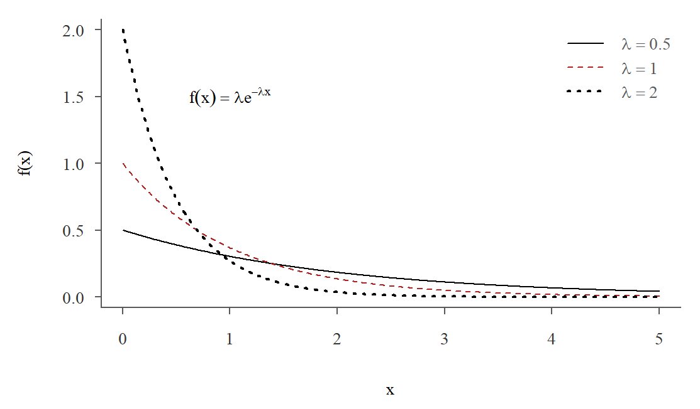
Şekil 9.17 üç farklı \(\lambda\) değeri için üstel yoğunluk fonksiyonunu göstermektedir. \(\lambda\) küçükken olaylar seyrek gerçekleşir, bekleme süresi uzar ve yoğunluk geniş bir aralığa yayılır. \(\lambda\) büyüdükçe olaylar sıklaşır, bekleme süresi kısalır ve yoğunluk başlangıca doğru toplanır.
Üstel dağılımın birikimli dağılım fonksiyonu aşağıda verilmiştir: \[ F(x) = \begin{cases} 1 - e^{-\lambda x}, & x \geq 0 \\ 0, & x < 0 \end{cases} \tag{9.26}\]
Üstel dağılımın beklenen değer ve varyansının \[ \mu = \frac{1}{\lambda}, \quad \sigma^2 = \frac{1}{\lambda^2} \] olduğu gösterilebilir. \(\mu\) iki olay arasındaki ortalama bekleme süresi olarak yorumlanır.
Üstel dağılımın alternatif bir formülasyonu ortalama bekleme süresini kullanır: \[ f(x) = \frac{1}{\mu} e^{- \frac{x}{\mu} },\quad x\geq 0 \tag{9.27}\]
Üstel dağılımın hafızasızlık özelliği vardır. \(s,t\geq 0\) olmak üzere \[ \P(X>s+t~|~X>s) = \P(X>t) \tag{9.28}\] olur. Örneğin bekleme süresi üstel dağılıma uyuyorsa, şimdiden 3 dakika beklemiş olmak en az 2 dakika daha bekleme olasılığını değiştirmez. Bu olasılık, beklemeye yeni başlamış birinin en az 2 dakika bekleme olasılığıyla aynıdır. Bu, Poisson varsayımlarının doğal bir sonucudur. Olaylar birbirinden bağımsız olarak ve sabit bir hızla gerçekleştiğine göre süreç ne kadar beklediğimizi hatırlamaz. Özellik birikimli dağılım fonksiyonundan kolayca gösterilebilir. \(X>s+t\) olayı \(X>s\) olayının içinde yer aldığından \[ \P(X>s+t~|~X>s) = \frac{\P(X>s+t)}{\P(X>s)} = \frac{e^{-\lambda(s+t)}}{e^{-\lambda s}} = e^{-\lambda t} = \P(X>t) \] bulunur.
Örnek 9.18 Bir bankanın müşteri hizmetlerine gelen aramaların bekleme süresi üstel dağılımla modellenebilmektedir. Saatte ortalama 15 arama geldiği bilindiğine göre iki arama arasındaki bekleme süresinin ortalaması dakika cinsinden kaçtır? Bekleme süresinin \(1\) dakikadan az olma olasılığı kaçtır? Bekleme süresinin 5 dakikadan fazla olma olasılığı kaçtır?
Çözüm:
Burada \(X\), müşteri hizmetlerine gelen iki çağrı arasındaki dakika cinsinden bekleme süresi olsun. Üstel dağılımın oran parametresi \(\lambda\) birim zamanda gerçekleşen olay sayısını ifade eder. Saat başına 15 arama geldiğine göre, dakika başına arama sayısı \[ \lambda = \frac{15}{60} = 0.25\quad \text{dakika başına olay sayısı} \] olur. Öyleyse iki arama arasındaki ortalama bekleme süresi \[ \E(X)=\frac{1}{\lambda} = \frac{1}{0.25}=4~~ \mbox{dakika} \] olur. Üstel dağılımda bekleme süresinin ortalaması, oran parametresinin tersine eşittir.
Bekleme süresinin \(1\) dakikadan az olma olasılığını bulmak için birikimli dağılım fonksiyonunu kullanabiliriz: \[
\P(X\leq 1) = F(1,\lambda=0.25) = 1 - e^{(-0.25) (1)} \approx 0.22
\] bulunur. Şekil 9.18 (a) bu olasılığı yoğunluk fonksiyonu üzerinde göstermektedir. R’da bu olasılığı hesaplamak için pexp() fonksiyonu kullanılabilir:
pexp(q = 1, rate = 0.25)[1] 0.2211992Bekleme süresinin 5 dakikadan fazla olma olasılığı \[
\P(X>5) = 1-\P(X\leq 5) = 1-F(5)
\] ve birikimli dağılım fonksiyonundan hareketle: \[
1-F(5) = 1- 1 + e^{(-0.25) (5)} \approx 0.287
\] bulunur. Şekil 9.18 (b) bu olasılığı yoğunluk fonksiyonu üzerinde göstermektedir. R ile hesaplamayı yapalım:
# P(X > 5) = 1 - P(X < 5)
# = 1 - F(5)
1-pexp(q = 5, rate = 0.25)[1] 0.2865048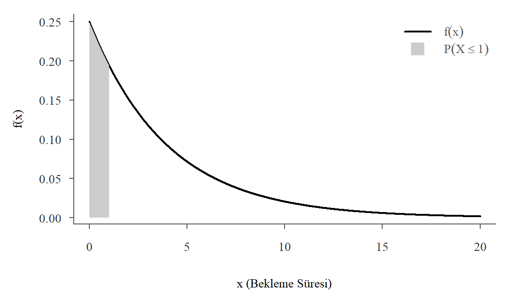
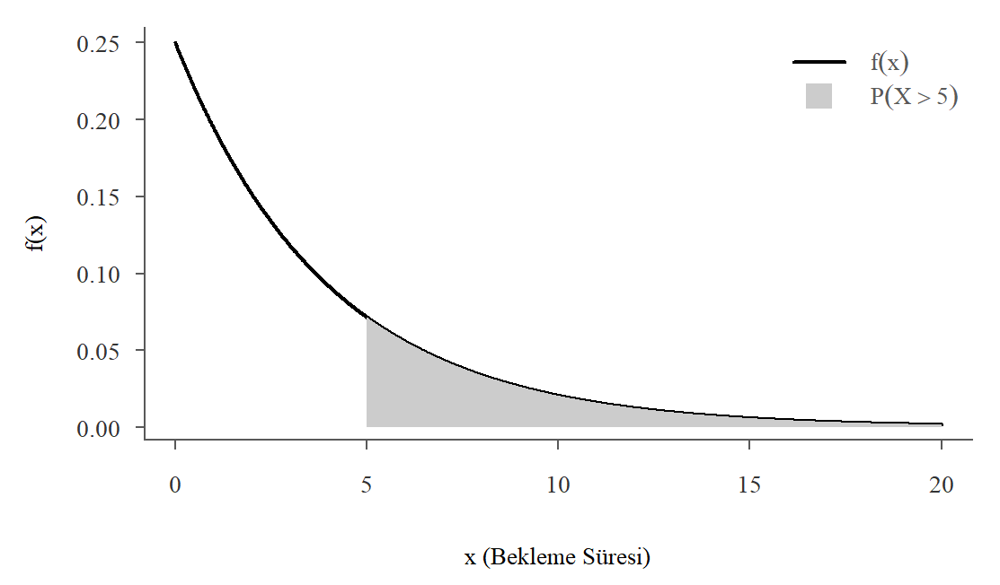
9.6 R’da Sürekli Dağılım Fonksiyonları
Kesikli dağılımlarda olduğu gibi (bkz. Kısım 8.5.5) R’da her sürekli dağılım için dört fonksiyon vardır. Fonksiyonların adları, dağılımın kısaltmasının önüne gelen bir harfle oluşturulur (Tablo 9.1).
R’daki sürekli dağılım fonksiyonları
| Ön ek | Hesapladığı | Tekdüze | Üstel | Normal |
|---|---|---|---|---|
| d | olasılık yoğunluk fonksiyonu, \(f(x)\) | dunif() |
dexp() |
dnorm() |
| p | birikimli dağılım fonksiyonu, \(F(x)=\P(X\leq x)\) | punif() |
pexp() |
pnorm() |
| q | yüzdelik: \(F(x_p)=p\) eşitliğini sağlayan \(x_p\) değeri | qunif() |
qexp() |
qnorm() |
| r | bu dağılımdan rassal sayı üretir | runif() |
rexp() |
rnorm() |
Kesikli dağılımlarda d ön ekli fonksiyonlar \(\P(X=x)\) olasılığını veriyordu. Sürekli dağılımlarda bu olasılık sıfır olduğu için dunif(), dexp() ve dnorm() bir olasılık değil, o noktadaki yoğunluk değerini döndürür. Olasılıklar yine p ön ekli fonksiyonlarla, yani alan hesabıyla bulunur.
Sınavı tamamlama süresi örneğinde (bkz. Örnek 9.2) süre \(U(20,40)\) dağılımına uyuyordu.
punif(30, min = 20, max = 40) # P(X <= 30)[1] 0.5punif(35, min = 20, max = 40) - punif(25, min = 20, max = 40) # P(25 < X < 35)[1] 0.5qunif(0.5, min = 20, max = 40) # medyan[1] 30Çağrı merkezi örneğinde (bkz. Örnek 9.18) iki arama arasındaki bekleme süresi \(\lambda=0.25\) parametreli üstel dağılıma uyuyordu.
pexp(1, rate = 0.25) # P(X <= 1)[1] 0.22119921 - pexp(5, rate = 0.25) # P(X > 5)[1] 0.2865048qexp(0.9, rate = 0.25) # bekleme sürelerinin yüzde 90'ı bu değerin altındadır[1] 9.21034Son satırdaki hesap, bu bölümde tanımladığımız yüzdelik kavramının (bkz. Tanım 9.3) R karşılığıdır. Normal dağılım fonksiyonlarını bir sonraki bölümde ayrıntılı olarak kullanacağız (bkz. Bölüm 10). Adı r harfiyle başlayan fonksiyonlar ise simülasyon içindir. Bu bölümde runif()’i tekdüze dağılımın aralık olasılıklarını gözlemek için kullanmıştık (bkz. Örnek 9.3).
9.7 Çözümlü Alıştırmalar
Alıştırma 9.1 Aşağıda verilen olasılık yoğunluk fonksiyonunu kullanarak cevaplayınız: \[ f(x)= \left\{ \begin{array}{ll} \frac{3}{4}(1-x^2), & -1<x<1~ \hbox{ise;} \\ 0, & \hbox{değilse.} \end{array} \right. \]
- Bunun bir oyf olup olmadığını gösterin. Grafiğini çizin.
- Beklenen değerini bulun.
- Birikimli dağılım fonksiyonunu bulun.
Çözüm:
(a)
Bir fonksiyonun olasılık yoğunluk fonksiyonu (oyf) olabilmesi için iki koşulun sağlanması gerekir:
- \(f(x) \geq 0\) her \(x\) için.
- Tüm \(x\) için integralin 1’e eşit olması gerekir: \[ \int_{-1}^{1} f(x) \, dx = 1 \]
İlk koşul, \(f(x) = \frac{3}{4}(1 - x^2)\) fonksiyonunun \(-1 \leq x \leq 1\) aralığında negatif olmaması nedeniyle sağlanmaktadır. Şimdi, ikinci koşulu kontrol edelim.
İntegral Hesaplaması: \[ \int_{-1}^{1} \frac{3}{4}(1 - x^2) \, dx = \frac{3}{4} \left( \int_{-1}^{1} 1 \, dx - \int_{-1}^{1} x^2 \, dx \right) \]
- \(\int_{-1}^{1} 1 \, dx = 2\)
- \(\int_{-1}^{1} x^2 \, dx = \left[ \frac{x^3}{3} \right]_{-1}^{1} = \frac{2}{3}\)
Buradan \[ \frac{3}{4} \left( 2 - \frac{2}{3} \right) = \frac{3}{4} \times \frac{4}{3} = 1 \] buluruz. Öyleyse bu fonksiyon bir oyf’dir.
(b)
Beklenen değer \(\E(X)\)’i bulalım:
\[
\E(X) = \int_{-1}^{1} x f(x) \, dx = \int_{-1}^{1} x \cdot \frac{3}{4}(1 - x^2) \, dx
\]
Bu integrali çözelim: \[ \E(X) = \frac{3}{4} \int_{-1}^{1} x(1 - x^2) \, dx = \frac{3}{4} \int_{-1}^{1} (x - x^3) \, dx=\left.\frac{3}{4}\left(\frac{x^2}{2}-\frac{x^4}{4} \right)\right|_{-1}^1 = \frac{3}{4}\left[\left(\frac{1}{2}-\frac{1}{4}\right)-\left(\frac{1}{2}-\frac{1}{4}\right)\right] \]
Böylece \[ \E(X) = 0 \] bulunur. Yoğunluk fonksiyonu 0 etrafında simetrik olduğu için bu sonuç şaşırtıcı değildir. Grafiği çizmek için aşağıdaki R kodunu kullanabiliriz. Şekil 9.19 bu kodun çıktısını göstermektedir.
# olasılık yoğunluk fonksiyonu tanımlaması
pdf <- function(x) {
ifelse(abs(x) <= 1, 3/4 * (1 - x^2), 0)
}
# X aralığı
x_vals <- seq(-1, 1, by = 0.01)
# Beklenen değer E(X)'i nümerik olarak hesapla
# Bunun 0 olduğunu bulmuştuk
expected_value <- integrate(function(x) x * pdf(x), -1, 1)$value
# oyf değerlerini hesapla
pdf_vals <- sapply(x_vals, pdf)
# oyf'yi çiz
plot(x_vals, pdf_vals,
type = "l", col = "black", lwd = 2,
main = "", xlab = "x", ylab = "f(x)",
xlim = c(-1, 1), ylim = c(0, 1)
)
# Beklenen değeri kesikli kırmızı çizgiyle göster
abline(h = 0, v = 0, col = "gray", lty = 2)
# E(X)
text(0, 0.1, labels = paste("E(X) =", round(0, 3)), col = "firebrick")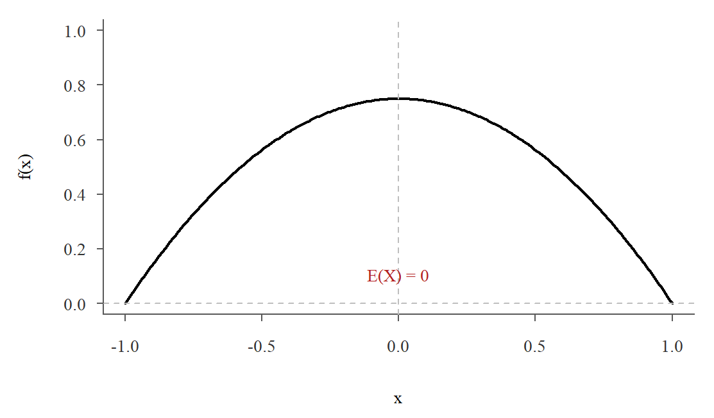
(c)
Birikimli dağılım fonksiyonu \(F(x)\), oyf’nin integralidir: \[ F(x) = \int_{-1}^{x} f(t) \, dt = \int_{-1}^{x} \frac{3}{4}(1 - t^2) \, dt \]
Bu integrali çözelim: \[ F(x) = \frac{3}{4} \left[ \int_{-1}^{x} 1 \, dt - \int_{-1}^{x} t^2 \, dt \right] \]
İntegral Hesaplaması:
\(\int_{-1}^{x} 1 \, dt = x - (-1) = x + 1\)
\(\int_{-1}^{x} t^2 \, dt = \left[ \frac{t^3}{3} \right]_{-1}^{x} = \frac{x^3 + 1}{3}\)
Sonuç olarak: \[ F(x) = \frac{3}{4} \left( x + 1 - \frac{x^3 + 1}{3} \right) \] Bunu daha sadeleştirerek yazalım: \[ F(x) = \frac{3}{4} \left( x + \frac{2}{3} - \frac{x^3}{3} \right) \] Sınırları da dikkate alarak: \[ F(x)=\left\{ \begin{array}{ll} 0, & x<-1;\\ \frac{3x}{4}+\frac{1}{2}-\frac{x^3}{4}, &-1\leq x\leq1; \\ 1, & x>1. \end{array} \right. \] yazabiliriz.
Alıştırma 9.2 Örnek 9.9’de verilen olasılık yoğunluk fonksiyonunu kullanarak \[ f(x)= \left\{ \begin{array}{ll} e^{-x}, & 0<x<\infty~ \hbox{ise;} \\ 0, & \hbox{değilse.} \end{array} \right. \]
- \(\P(0.5<X<1)\)
- \(\P(X>2)\)
olasılıklarını hesaplayınız ve R programını kullanarak grafik üzerinde gösteriniz.
Çözüm
- \(\P(0.5<X<1)\) olasılığını analitik olarak bulalım: \[ \P(0.5<X<1) = \int_{0.5}^{1} e^{-x}dx =\left[ -e^{-x} \right]_{0.5}^{1}=-e^{-1}+e^{-0.5} \approx 0.239 \] Birikimli dağılım fonksiyonundan hareketle de \[ \P(0.5<X<1) = F(1)-F(0.5)=(1-e^{-1})-(1-e^{-0.5}) \approx 0.239 \] aynı sonuca ulaşılabilir (bkz. Şekil 9.20 (a)).
\(f(x)\)’in \(\lambda=1\) olduğu bir üstel yoğunluk fonksiyonu olduğuna dikkat ediniz. Bu olasılığı R ile de bulalım:
# pexp(x, rate=lambda) = üstel birikimli dağılım
pexp(1, rate=1)-pexp(0.5, rate=1)[1] 0.2386512- \(\P(X>2)\) olasılığının bulunması.
\[ \P(X>2) = \int_{2}^{\infty} e^{-x}dx = \left[ -e^{-x} \right]_{2}^{\infty}=0+e^{-2} \approx 0.135 \]
\[
\P(X>2) = F(\infty)-F(2)=1-(1-e^{-2}) \approx 0.135
\] R ile de bulalım:
1-pexp(2, rate=1)[1] 0.1353353Aşağıdaki kodu kullanarak bu olasılıkları yoğunluk grafikleri üzerinde gösterebiliriz (Şekil 9.20).
# yoğunluk fonksiyonunu tanımla
pdf <- function(x) {
exp(-x)
}
# x tanım aralığı
x_values <- seq(0, 5, length.out = 500)
y_values_pdf <- sapply(x_values, pdf)
#
x_fill <- seq(0.5, 1, length.out = 500)
y_fill <- sapply(x_fill, pdf)
# Nümerik integral ile olasılık hesaplama
probability1 <- integrate(pdf, lower = 0.5, upper = 1)$value
probability2 <- integrate(pdf, lower = 2, upper = Inf)$value
# Yoğunluk grafiği
plot(x_values, y_values_pdf, type = "l",
col = "black", frame.plot = FALSE,
main = "", xlab = "x", ylab = "f(x)")
# Olasılık P(0.5<X<1)
polygon(c(0.5, x_fill, 1), c(0, y_fill, 0),
col = "gray80", border = NA)
text(0.5, max(y_values_pdf) * 0.7,
paste("P(0.5<X<1) = ", round(probability1, 3)),
col = "black", cex = 0.8, pos = 4)
# ikinci grafik
x_fill2 <- seq(2, 5, length.out = 500)
y_fill2 <- sapply(x_fill2, pdf)
plot(x_values, y_values_pdf, type = "l",
col = "black", frame.plot = FALSE,
main = "", xlab = "x", ylab = "f(x)")
#
polygon(c(2, x_fill2, 5), c(0, y_fill2, 0),
col = "gray80", border = NA)
# Olasılık P(X>2)
text(2, 0.2, paste("P(X>2) = ", round(probability2, 3)),
col = "black", cex = 0.8, pos = 4)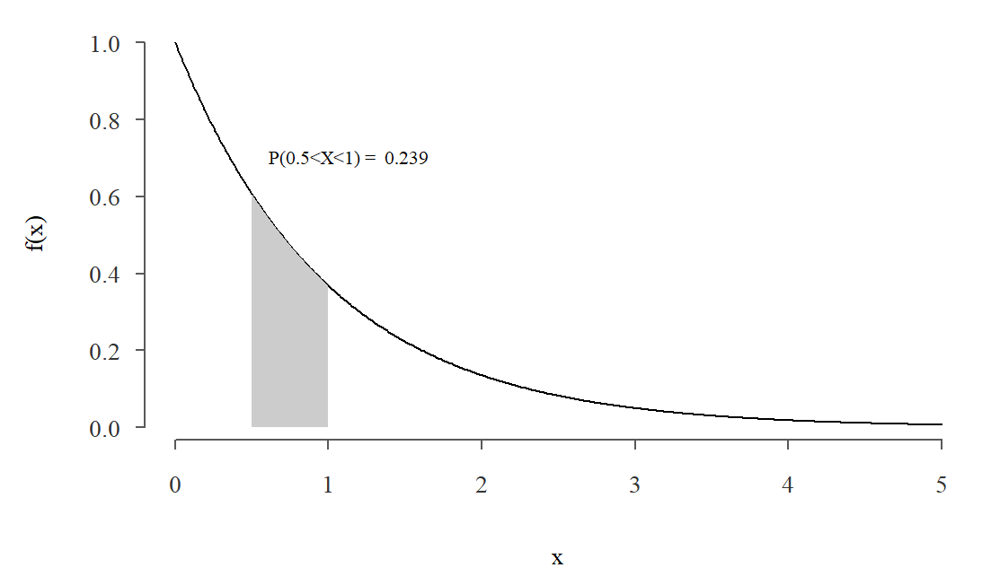
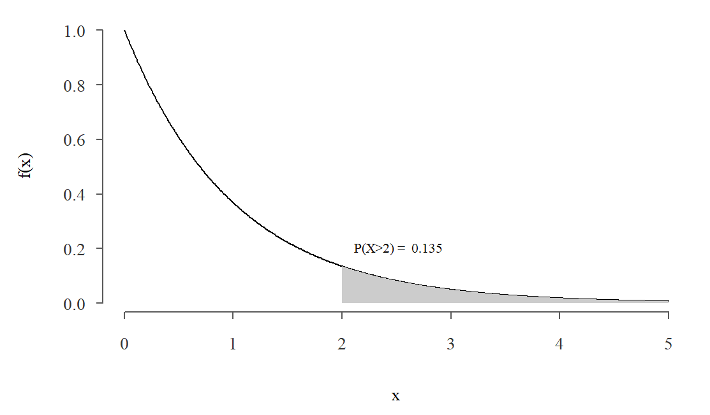
Alıştırma 9.3 Lojistik dağılımın birikimli dağılım fonksiyonu aşağıda verilmiştir: \[ F(x) = \frac{e^x}{1+e^x},\quad -\infty<x<\infty \] Buna göre aşağıdaki soruları yanıtlayınız.
- Olasılık yoğunluk fonksiyonunu, \(f(x)\), bulunuz.
- \(f(x)\)’i kullanarak \(\P(-1<X<1)\) olasılığını hesaplayınız.
- R programını kullanarak \(f(x)\)’in grafiğini çiziniz ve bu grafik üzerinde istenen olasılığa karşılık gelen bölgeyi işaretleyiniz.
Çözüm
a) Olasılık yoğunluk fonksiyonu:
Lojistik dağılımın birikimli dağılım fonksiyonu \(F(x)\) verildiğine göre, olasılık yoğunluk fonksiyonu \(f(x)\) birinci türevi alınarak bulunur: \[ f(x) = \frac{d}{dx} F(x) \] \[ f(x) = \frac{d}{dx} \left(\frac{e^x}{1+e^x}\right) \] Bu türevi iki fonksiyonun oranının türevi, yani bölme kuralı ile hesaplayalım: \[ f(x) = \frac{(1+e^x) \cdot \frac{d}{dx} \left(e^x\right) - e^x \cdot \frac{d}{dx}(1+e^x)}{(1+e^x)^2} \] Burada \(\frac{d}{dx}(e^x) = e^x\) ve \(\frac{d}{dx}(1+e^x) = e^x\) olduğundan, \[ f(x) = \frac{e^x(1+e^x) - e^x \cdot e^x}{(1+e^x)^2} \] Bu ifadeyi sadeleştirirsek: \[ f(x) = \frac{e^x + e^{2x} - e^{2x}}{(1+e^x)^2} = \frac{e^x}{(1+e^x)^2} \]
Sonuç olarak, lojistik dağılımın olasılık yoğunluk fonksiyonu şu şekildedir: \[ f(x) = \frac{e^x}{(1+e^x)^2} \]
b) \(\P(-1 < X < 1)\) olasılığının hesaplanması:
Bu olasılık, \(f(x)\)’in \(x = -1\) ile \(x = 1\) arasındaki integralidir: \[ \P(-1 < X < 1) = \int_{-1}^{1} \frac{e^x}{(1+e^x)^2}\, dx \]
Bu integrali çözmek için değişken dönüşümü yöntemini kullanabiliriz. \(u = 1 + e^x\) ve \(du = e^x dx\) tanımlayalım. Bu durumda sınırlar
- \(x = -1\) olduğunda, \(u = 1 + e^{-1}\)
- \(x = 1\) olduğunda, \(u = 1 + e^{1}\)
olur. Buna göre, integral şu hale gelir: \[ \int_{1+e^{-1}}^{1+e^{1}} \frac{1}{u^2} \, du = \left[-\frac{1}{u}\right]_{1+e^{-1}}^{1+e^{1}} \] Sınırları yerine koyduğumuzda: \[ \P(-1 < X < 1) = \left[-\frac{1}{u}\right]_{1+e^{-1}}^{1+e^{1}} = -\frac{1}{1+e^{1}} + \frac{1}{1+e^{-1}} \] elde ederiz. R ile bu ifadeyi hesaplayalım:
(1 / (1 + exp(-1))) - (1 / (1 + exp(1)))[1] 0.4621172İstenen aralık olasılığı \[ \P(-1 < X < 1) = \frac{1}{1+e^{-1}} - \frac{1}{1+e^{1}} \approx 0.46 \] olur. Alternatif olarak R’da nümerik integrasyon ile olasılığın hesaplanması:
# Logistik dağılımın olasılık yoğunluk fonksiyonu
f <- function(x) {
exp(x) / (1 + exp(x))^2
}
# Belirtilen olasılığı hesaplama
olasilik <- integrate(f, lower = -1, upper = 1)$value
olasilik[1] 0.4621172c) Grafiğinin çizilmesi:
Aşağıdaki R kodunu kullanarak istenen grafiği çizebilir ve olasılığa karşılık gelen bölgeyi işaretleyebiliriz (Şekil 9.21):
# Lojistik dağılımın olasılık yoğunluk fonksiyonu
f <- function(x) {
exp(x) / (1 + exp(x))^2
}
# poligon değerleri
x_vals <- seq(-1, 1, length.out = 1000)
# önce poligonu çiz
plot(NA, xlim = c(-6, 6), ylim = c(0, max(f(x_vals))),
ylab = "f(x)", xlab = "x", xaxt = "n", cex.axis = 0.8)
axis(1, at = -6:6, cex.axis = 0.8) # x eksenini ayarla
polygon(c(-1, x_vals, 1),
c(0, f(x_vals), 0),
col = "lightgray", border = NA)
# Fonksiyonu ekle
curve(f, from = -6, to = 6,
col = "black", lwd = 1, add = TRUE)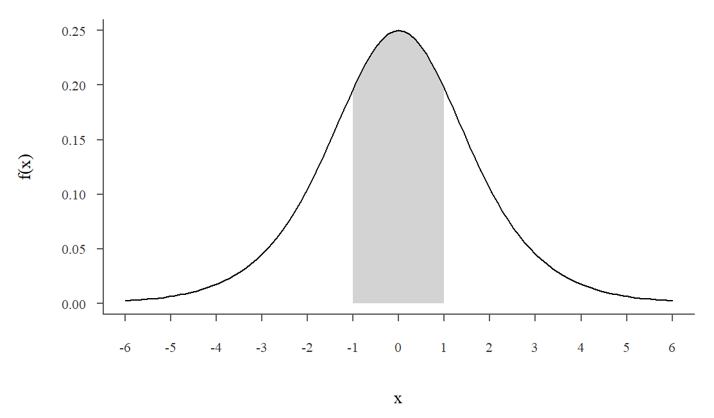
Taralı bölgenin alanını R’ın plogis() fonksiyonu ile de bulabiliriz:
# plogis: lojistik dağılım fonksiyonu
# plogis(1,location = 0, scale=1)
plogis(1)-plogis(-1)[1] 0.4621172Alıştırma 9.4 \(X\), (10,20) aralığında tanımlı tekdüze bir rassal değişken olsun: \(X\sim~Uniform(10,20)\). \(X\)’in medyanının 15 olduğunu gösterin.
Çözüm:
\(X\)’in yoğunluk fonksiyonu aşağıdaki gibi yazılabilir: \[ f(x)=\left\{ \begin{array}{ll} \frac{1}{10}, &10\leq x\leq 20; \\ 0, & \hbox{değilse}. \end{array} \right. \] Medyan, tam ortadaki, yani \(X\)’in küçük olma olasılığının \(0.5\) olduğu değer olarak tanımlanır. Öyleyse: \[ \P(X<m)=\int_a^m f(x)dx=0.5 \] eşitliğini sağlayan \(m\) sabiti medyan olur. Burada \(a\), \(X\)’in değerler aralığının alt sınırıdır. Uniform dağılımın oyf’sinden hareketle \[ \P(X<m)=\int_{10}^m \frac{1}{10}dx=0.5 \] yazarız. Buradan \[ \left. \frac{1}{10}x \right|_{10}^m=0.5 \] \[ \frac{m}{10}-1=0.5\rightarrow\quad m=15 \] bulunur.
Genel olarak \(X\sim~Uniform(a,b)\) için medyanın \[ m=\frac{a+b}{2} \] olduğu gösterilebilir.
Alıştırma 9.5 Örnek 9.17’de aşağıdaki oyf’ye sahip \[ f(x)= \left\{ \begin{array}{ll} 3x^2, & 0<x<1~ \hbox{ise;} \\ 0, & \hbox{değilse.} \end{array} \right. \] \(X\) sürekli rassal değişkeninin ilk dört momentini bulmuştuk: \[ \E(X) =\mu= \frac{3}{4}, \quad \E(X^2) = \frac{3}{5}, \quad \E(X^3) = \frac{1}{2}, \quad \E(X^4) = \frac{3}{7} \] \(X\)’in 3. ve 4. merkezi ve standart momentlerini bulun. Ayrıca \[ \E\left[(X-\mu)^3 \right] = \E(X^3)-3\mu\E(X^2)+2\mu^3 \] ve \[ \E\left[(X-\mu)^4 \right] = \mathbb{E}[X^4] - 4\mu\mathbb{E}[X^3] + 6\mu^2\mathbb{E}[X^2] - 3\mu^4 \] olduğunu gösterin.
Çözüm:
Önce 3. merkezi momenti bulalım:
\[\begin{align*} \E\left[(X-\mu)^3 \right] &= \int_0^1 (x - \mu)^3 f(x) \, dx \\ &= \int_0^1 \left(x - \frac{3}{4}\right)^3 \cdot 3x^2 \, dx \end{align*}\]Burada \((a+b)^3 = a^3+3a^2b+3ab^2+b^3\) açılımını kullanarak: \[ \left(x - \frac{3}{4}\right)^3 = x^3 - 3 \cdot x^2 \cdot \frac{3}{4} + 3 \cdot x \cdot \left(\frac{3}{4}\right)^2 - \left(\frac{3}{4}\right)^3 \] yazabiliriz. Bunu integralde yerine koyalım:
\[\begin{align*} \E\left[(X-\mu)^3 \right] &= \int_0^1 \left(3x^5 - \frac{27}{4}x^4 + \frac{81}{16}x^3 - \frac{81}{64}x^2 \right) dx \\ &= 3 \int_0^1 x^5 dx - \frac{27}{4} \int_0^1 x^4 dx + \frac{81}{16} \int_0^1 x^3 dx - \frac{81}{64} \int_0^1 x^2 dx \\ &= 3 \cdot \frac{1}{6} - \frac{27}{4} \cdot \frac{1}{5} + \frac{81}{16} \cdot \frac{1}{4} - \frac{81}{64} \cdot \frac{1}{3} \\ &= \frac{1}{2} - \frac{27}{20} + \frac{81}{64} - \frac{27}{64} \\ & = -\frac{1}{160} = -0.00625 \end{align*}\]bulunur.
Soruda verilen kısa yol formülünü kullanarak
\[\begin{align*} \E\left[(X-\mu)^3 \right] &= \E(X^3)-3\mu\E(X^2)+2\mu^3 \\ &= \frac{1}{2} - 3\cdot \frac{3}{4}\cdot \frac{3}{5} + 2\left(\frac{3}{4}\right)^3 \\ &= -0.00625 \end{align*}\]aynı sonuca ulaşılır.
- standart moment \[ \gamma_3 = \frac{\E\left[(X-\mu)^3 \right] }{\sigma^3} \] Standart sapma \(\sigma=\sqrt{3/80}\approx 0.194\) daha önce bulunmuştu. Yuvarlama hatasından kaçınmak için hesapta \(\sigma^3=(3/80)^{3/2}\) değerini kullanalım: \[ \gamma_3 = \frac{-0.00625}{(3/80)^{3/2}} \approx -0.861 \] bulunur. Çarpıklık katsayısı \(\gamma_3\) negatif olduğu için \(f(x)\) sola çarpık bir dağılımdır.
Şimdi 4. merkezi momenti bulalım:
\[\begin{align*} \E\left[(X-\mu)^4 \right] &= \int_0^1 (x - \mu)^4 f(x) \, dx \\ &= \int_0^1 \left(x - \frac{3}{4}\right)^4 \cdot 3x^2 \, dx \end{align*}\]Burada \[ (a+b)^4 = a^4 + 4a^3b+6a^2b^2+4ab^3+b^4 \] açılımını kullanarak \[ (x - \mu)^4 = x^4 - 4x^3\mu + 6x^2\mu^2 - 4x\mu^3 + \mu^4 \] yazabiliriz. İntegralde yerine koyarsak
\[\begin{align*} \E\left[(X-\mu)^4 \right] &= \int_0^1 \left(x - \frac{3}{4}\right)^4 \cdot 3x^2 dx \\ &= \int_0^1 \left(x^4 - 4x^3\frac{3}{4} + 6x^2\left(\frac{3}{4}\right)^2 - 4x\left(\frac{3}{4}\right)^3 + \left(\frac{3}{4}\right)^4 \right) \cdot 3x^2 dx \\ &= \int_0^1 \left(3x^6 - 12x^5\frac{3}{4} + 18x^4\left(\frac{3}{4}\right)^2 - 12x^3\left(\frac{3}{4}\right)^3 + 3x^2\left(\frac{3}{4}\right)^4 \right) dx \\ &= 3 \int_0^1 x^6dx - 9 \int_0^1 x^5dx+ \left(\frac{81}{8}\right) \int_0^1 x^4dx - \left(\frac{81}{16}\right) \int_0^1 x^3dx + \left(\frac{243}{256}\right) \int_0^1 x^2dx \\ & = 3\cdot \frac{1}{7} - 9\cdot \frac{1}{6}+\frac{81}{8}\cdot \frac{1}{5} - \frac{81}{16}\cdot \frac{1}{4} + \frac{243}{256}\cdot \frac{1}{3} \\ &= \frac{39}{8960} \approx 0.00435 \end{align*}\]bulunur.
Ayrıca \[ \E\left[(X-\mu)^4 \right] = \mathbb{E}[X^4] - 4\mu\mathbb{E}[X^3] + 6\mu^2\mathbb{E}[X^2] - 3\mu^4 \] ilişkisinden hareketle de \[ \E\left[(X-\mu)^4 \right] = \frac{3}{7} - 4\frac{3}{4}\frac{1}{2} + 6\left(\frac{3}{4} \right)^2 \frac{3}{5} - 3 \left(\frac{3}{4} \right)^4\approx 0.00435 \] olduğu gösterilebilir.
- standart moment \[ \gamma_4 = \frac{\E\left[(X-\mu)^4 \right] }{\sigma^4}=\frac{39/8960}{(3/80)^2} = \frac{65}{21} \approx 3.095 \] olur. Basıklık katsayısı 3’ten biraz büyük olduğu için bu dağılım normal dağılıma göre biraz sivridir.
9.8 Problemler
Problem 9.1 Örnek 9.5’de verilen olasılık yoğunluk fonksiyonunu \[ f(x)= \left\{ \begin{array}{ll} 3x^2, & 0<x<1~ \hbox{ise;} \\ 0, & \hbox{değilse.} \end{array} \right. \] kullanarak aşağıdaki olasılıkları bulun.
- \(\P(X\leq 0.5)\)
- \(\P(0.6< X <0.9)\)
- \(\P(X>0.7)\)
Problem 9.2 Aşağıdaki fonksiyonu düşünelim: \[ f(x)= \left\{ \begin{array}{ll} cx, & 2<x<4~ \hbox{ise;} \\ 0, & \hbox{değilse.} \end{array} \right. \]
- \(f(x)\)’in bir olasılık yoğunluk fonksiyonu olması için \(c\) kaç olmalıdır?
- \(\P(2.4<X<3.1)\) olasılığı kaçtır?
- \(X\)’in beklenen değerini bulun.
- \(X\)’in varyansını bulun.
- \(X\)’in medyanını bulun.
- \(X\)’in hangi sayıyı aşmama olasılığı %90’dır?
- Birikimli dağılım fonksiyonunu, \(F(x)\), bulun.
- \(F(x)\)’i kullanarak \(X\)’in 3’ten büyük olma olasılığını bulun, \(\P(X>3)=?\).
Problem 9.3 Aşağıdaki fonksiyonu düşünelim:
\[
f(x)=
\left\{
\begin{array}{ll}
cx^2, & 0<x<3~ \hbox{ise;} \\
0, & \hbox{değilse.}
\end{array}
\right.
\]
- \(f(x)\)’in bir olasılık yoğunluk fonksiyonu olması için sabit sayı \(c\) kaç olmalıdır?
- \(f(x)\)’i kullanarak \(\P(1<X<2)\) olasılığını hesaplayınız ve \(f(x)\)’in grafiğinin üzerinde gösteriniz.
- \(X\)’in beklenen değerini bulunuz.
- \(X\)’in varyansını bulunuz.
- Birikimli dağılım fonksiyonunu bulunuz.
- \(F(x)\)’i kullanarak \(\P(X>2)\) olasılığını hesaplayınız.
- \(X\)’in hangi sayıyı aşmama olasılığı 0.95’tir? Yani \(F(a)=\P(X\leq a)=0.95\) eşitliğini sağlayan \(a\) sayısı kaçtır?
Problem 9.4 Bir şehirde yaşayan hanehalklarının aylık harcama tutarlarının medyanı 2500 TL’dir. Ayrıca, hanelerin %20’sinin harcamasının 5000 TL’den çok, %90’ının harcamasının ise 10000 TL’den az olduğu bilinmektedir. Buna göre
- Rassal seçilmiş bir hanenin aylık harcamasının 2500 TL’den az olma olasılığı kaçtır?
- Aylık harcamanın 2500 TL ile 5000 TL arasında olma olasılığı kaçtır?
- Aylık harcamanın 5000 TL ile 10000 TL arasında olma olasılığı kaçtır?
- Harcamanın 4000 TL’den az olma olasılığı hakkında ne söylenebilir?
Problem 9.5 \(X\) sürekli rassal değişkeni 2 ile 6 arasında değerler almaktadır. Olasılık yoğunluk fonksiyonu \(f(x)=0.25\) olarak tanımlıdır.
- \(f(x)\)’in gerçekten bir olasılık yoğunluk fonksiyonu olduğunu gösterin ve grafiğini çizin.
- \(\P(3<X<5)\) olasılığını hesaplayın.
- Birikimli dağılım fonksiyonunu bulun ve grafiğini çizin.
- \(\P(X>5)=?\)
- \(\P(X<a)=0.025\) ve \(\P(X>b)=0.025\) olmasını sağlayan \(a\) ve \(b\) sayılarını bulun. \(\P(a\leq X \leq b)=0.95\) gibi bir aralık oluşturun.
Problem 9.6 Bir havayolu şirketinin uçaklarının rötar süresi 0 ile 60 dakika arasında tekdüze dağılıma uymaktadır, \(X\sim~U(0,60)\). Buna göre
- Yolcuların uçağa binmek için 40 dakikadan fazla bekleme olasılığı kaçtır? Olasılık yoğunluk fonksiyonunu çizerek bu olasılığı grafik üzerinde gösteriniz.
- Ortalama bekleme süresi kaçtır?
- Standart sapmayı bulun.
- Uçağın rötar süresinin %90 olasılıkla küçük olduğu değer kaçtır? Olasılık yoğunluk fonksiyonu üzerinde gösteriniz.
Problem 9.7 \(-1\leq x \leq 1\) aralığında tanımlı \(X\) rassal değişkeni için olasılık yoğunluk fonksiyonunun grafiği aşağıda gösterilmiştir (Şekil 9.22). Bu fonksiyonu bulun ve oyf koşullarını sağlayıp sağlamadığını araştırın (ipucu: tepe noktası \(x=0\) değerinde \(1\)’e eşittir).
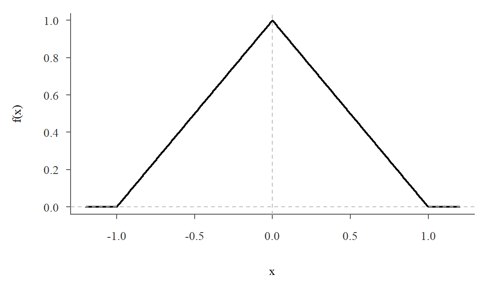
Problem 9.8 Bir arkadaşınız \(f(x)=1-x^2\) fonksiyonunun \(-1<x<1\) aralığında bir olasılık yoğunluk fonksiyonu olduğunu iddia ediyor. Katılıyor musunuz? Açıklayın.
Problem 9.9 Örnek 9.9’de verilen olasılık yoğunluk fonksiyonunu kullanarak \[ f(x)= \left\{ \begin{array}{ll} e^{-x}, & 0<x<\infty~ \hbox{ise;} \\ 0, & \hbox{değilse.} \end{array} \right. \] \(X\)’in beklenen değerini, \(\E(X)\), ve varyansını, \(\Var(X)\), bulunuz.
İpucu: \(\E(X)\)’i bulmak için \(u=x\), \(du=dx\), ve \(dv=e^{-x}dx\), \(v=-e^{-x}\) tanımlayarak kısmi integral yöntemini uygulayınız: \[ \int u~dv = uv - \int v~du \] Benzer şekilde \(\E(X^2)\)’i bulmak için \(u=x^2\), \(du=2xdx\), ve \(dv=e^{-x}dx\), \(v=-e^{-x}\) ile kısmi integrasyon uygulanabilir. (Cevap: \(\E(X)=\Var(X)=1\)).
Problem 9.10 Bir otoyolda sürat limitini aşan araçların radar tarafından yakalanması için geçen bekleme süresi (saat) aşağıdaki birikimli dağılım fonksiyonuna sahiptir: \[ F(x) = \left\{ \begin{array}{ll} 0, & x<0 \hbox{;} \\ 1-e^{-6x}, & x\geq 0 \hbox{.} \end{array} \right. \]
Buna göre bekleme süresinin 20 dakikadan az olma olasılığı kaçtır?
Problem 9.11 Lojistik dağılımın birikimli dağılım fonksiyonunu daha önce incelemiştik (bkz. Alıştırma 9.3): \[ F(x) = \frac{e^x}{1+e^x},\quad -\infty<x<\infty \] \(f(x)\)’i kullanarak \(\P(-2<X<2)\) ve \(\P(X>4)\) olasılıklarını hesaplayınız. Bu olasılıkları \(F(x)\) ile de hesaplayınız. R programını kullanarak hem \(f(x)\)’in hem de \(F(x)\)’in grafiklerini çiziniz. Bulduğunuz olasılıkları bu grafikler üzerinde işaretleyiniz.